| title | date | content | domain | url | tags | |
|---|---|---|---|---|---|---|
| 0 | Ricoh to provide customer support for Agility ... | 2024-09-11 | ['The Digit humanoid could work in distributio... | therobotreport | https://www.therobotreport.com/ricoh-provides-... | ['Robotics', 'Video', 'BostonDynamics'] |
| 1 | MTV VMAs 2024: Live shopping is coming to the ... | 2024-09-11 | ['In this article', "When viewers tune in to t... | cnbc | https://www.cnbc.com/2024/09/11/mtv-vmas-2024-... | ['GenerativeAI'] |
| 2 | Open-source imagery is transforming investigat... | 2024-09-11 | ['Open-source online imagery can play a vital ... | theconversation | https://www.theconversation.com/open-source-im... | ['Disinformation', 'Video', 'Deepfake', 'Infor... |
| 3 | With China seeking AI dominance, Taiwan’ s eff... | 2024-09-11 | ['Tensions between China, Taiwan and the U.S. ... | theconversation | https://www.theconversation.com/with-china-see... | ['MilitaryAndDefense', 'Missiles', 'HighPerfor... |
| 4 | Study links EV charging stations to increased ... | 2024-09-11 | ['Countries globally are rapidly transitioning... | phys | https://phys.org/news/2024-09-links-ev-station... | ['Causality', 'Planning'] |
AI Media Trend Mining
Data Cleaning, Preprocessing & Exploratory Analysis
In today’s fast-changing AI landscape, timely and accurate information is crucial. AI breakthroughs in generative models, robotics, natural language processing (NLP), and ethics are reshaping industries and society at large.
This project applies advanced NLP techniques to:
- study AI innovations and debates,
- track emerging trends over time,
- analyze sentiment around key technological and ethical issues,
- experiment with building intelligent applications such as Q&A systems and news monitors (RAG).
However, cleaning and exploration is necessary before any analysis. As such, this notebook’s objectives are the following:
- Cleaning the
ai_media_dataset.csv(Kaggle Challenge Source) - Exploratory Data Analysis
- Temporal Analysis of Trends
- Sentiment Analysis
- Entities and Relationship Extraction
- Construction of a Knowledge Graph
1 Overview
The raw datasets contains the following features.
title: the media’s titledate: the media publication datecontent: list of the media’s content chunked by paragraphdomain: the publication URL domainurl: the URL of publicationtags: list of tags classifying the media
Features such as content and tags would need, after parsing, to be standardized. Moreover, we observe different entities and relationships in the dataset. Structuring the data efficiently is key for efficient analysis.
Adopting a Entity-Relationship Approach, we observe the following entities and relationships. The schemas has been purposefully kept concise, but modular. If needed, news entities Chunk or Tags could be created.
The rational behind separating each media from its chunked content or tags is the following.
First, standardization of the feature is important to avoid anomaly.
Second, both features are important features that will be used throghout the project under different form. For example, the chunked media’s content is important to allow the future RAG to grasp on precise part of the corpus. Alternatively, each chunk can be further associated with classes or sentiment for a deeper and granular understanding of the text. On top of that, a granular understand of the text is important for a Knowledge Graph. In the future, if each chunk were to be associated with new metrics, creating a unique Chunk entity would be wise.
Third, Knowledge Graph (see Section 10) requires us to understand the different entities of the data and their relationships. As such, keeping the schema evolving throughout the project will help us in the latter stage tremendously.
Tip
The goal is to keep this schema evolving throughout the project and our analysis requirements.
- Media (Entity)
media_idtitleurlfull_contentdomaindate
- Media_has_Chunk (Relationships):
media_idchunked_content
- Media_has_Tags (Relationship)
media_idtag
2 Summary of Key Findings
This notebook covers the full Stage 1 pipeline — from raw data ingestion to knowledge graph construction — over a corpus of 16,317 AI media articles published between September 2024 and August 2025.
Data & Preprocessing. The raw dataset required structural normalization, encoding fixes (mojibake, hex remnants), and sentence boundary correction. After cleaning, the corpus was tokenized, lemmatized, and prepared for downstream analysis. Three structured tables were derived: media, media_has_chunk (436,312 chunks), and media_has_tags (84,328 tags).
Exploratory Analysis. The corpus spans 62 unique domains and shows a right-skewed article length distribution (median ~1,100 words). GenerativeAI, LargeLanguageModel, and Video are the dominant tags throughout the period. January 2025 stands out as the peak month, driven by the DeepSeek-R1 release and the Stargate Project announcement.
Sentiment Analysis. Overall sentiment is mildly positive across the corpus. Tags related to HighPerformanceComputing and Personalisation score highest, while MilitaryAndDefense and Fairness trend toward neutral. No major domain shows a systematic negative bias.
Temporal Analysis. Article volume is stable at 1,100–1,700 per month, with a clear spike in January 2025, driven by the release of DeepSeek-R1 (January 20) and the Stargate Project announcement (January 21). GenerativeAI dominates every month; LargeLanguageModel peaks sharply in January 2025 before normalizing. A notable finding from the sentiment-over-time analysis is that DeepSeek showed a sharp positive sentiment spike around its release before normalizing, while ChatGPT trended gradually downward through 2025 — suggesting a shift in media enthusiasm from established to emerging models.
Topic Modelling. Using BERTopic with all-MiniLM-L6-v2 embeddings, we identified 20 coherent topics after reducing from 72. Core themes include AI News & Tech (General), ML Models & Training Data, Search, SEO & Marketing, and Agent Protocols (MCP/A2A). Topic dynamics over time confirm the January 2025 spike in search-related coverage.
Entity & Relation Extraction. Using LangExtract, we extracted 26,205 entity mentions and 820 explicit relationships across the corpus. The most frequent entity types are products, companies, and persons. Google, Google DeepMind, OpenAI, and Nvidia dominate by mention count.
Knowledge Graph. A NetworkX-based knowledge graph was constructed with 35,107 nodes (articles, entities, tags) and 111,115 edges. Degree centrality confirms Google and Google DeepMind as the most connected entities. The graph is exported and ready for reuse in Stage 3 RAG experiments.
Relevance for Stage 2. The sentence embeddings (all-MiniLM-L6-v2, 384 dimensions) computed in this stage provide a direct baseline for comparison with Stage 2 classical embeddings (Word2Vec, FastText, Doc2Vec) and fine-tuned compact LLMs. The cleaned and tokenized corpus, the topic assignments, and the entity labels are all available as inputs for Stage 2 model training and evaluation.
3 Structural Normalization
The initial cleaning process involves parsing both tags and content variable, as well as extracting the data into the appropriate schemas.
First we create the corresponding Media entity table, as well as Media_has_Chunk and Media_has_Tags relationship tables.
Code
stg_media = ai_media.copy()
stg_media["full_content"] = (
stg_media
.content
.apply(lambda content: "".join(parse_string_into_list(content)))
)
media = (
stg_media
.loc[:, ["title", "domain", "url", "full_content", "date"]]
.reset_index()
.rename(columns={"index": "media_id"})
)Code
stg_media_has_chunk = (
ai_media
.reset_index()
.rename(columns={"index": "media_id"})
.loc[:, ["media_id", "content"]]
)
stg_media_has_chunk["content_list"] = stg_media_has_chunk.content.apply(parse_string_into_list)
media_has_chunk = (
stg_media_has_chunk
.explode("content_list", ignore_index=False)
.drop(columns="content")
.rename(columns={"content_list": "chunked_content"})
)Code
os.makedirs("data/processed", exist_ok=True)
media.to_csv("data/processed/media.csv", index=False)
media_has_chunk.to_csv("data/processed/media_has_chunk.csv", index=False)
media_has_tags.to_csv("data/processed/media_has_tags.csv", index=False)| media_id | title | domain | url | full_content | date | sentiment | |
|---|---|---|---|---|---|---|---|
| 0 | 0 | Ricoh to provide customer support for Agility ... | therobotreport | https://www.therobotreport.com/ricoh-provides-... | The Digit humanoid could work in distribution,... | 2024-09-11 | 0.318182 |
| 1 | 1 | MTV VMAs 2024: Live shopping is coming to the ... | cnbc | https://www.cnbc.com/2024/09/11/mtv-vmas-2024-... | In this article', "When viewers tune in to the... | 2024-09-11 | 0.000000 |
| 2 | 2 | Open-source imagery is transforming investigat... | theconversation | https://www.theconversation.com/open-source-im... | Open-source online imagery can play a vital ro... | 2024-09-11 | -0.210526 |
| 3 | 3 | With China seeking AI dominance, Taiwan’ s eff... | theconversation | https://www.theconversation.com/with-china-see... | Tensions between China, Taiwan and the U.S. ar... | 2024-09-11 | 0.035714 |
| 4 | 4 | Study links EV charging stations to increased ... | phys | https://phys.org/news/2024-09-links-ev-station... | Countries globally are rapidly transitioning t... | 2024-09-11 | 0.600000 |
| media_id | chunked_content | sentiment | |
|---|---|---|---|
| 0 | 0 | The Digit humanoid could work in distribution,... | neutral |
| 1 | 0 | Agility Robotics Inc. this week announced a pa... | positive |
| 2 | 0 | The agreement extends Agility’ s support syste... | positive |
| 3 | 0 | “ We expect our exclusive and differentiated p... | positive |
| 4 | 0 | “ Partnering with Ricoh helps us to provide ex... | positive |
| media_id | tag | |
|---|---|---|
| 0 | 0 | Robotics |
| 1 | 0 | Video |
| 2 | 0 | BostonDynamics |
| 3 | 1 | GenerativeAI |
| 4 | 2 | Disinformation |
4 Data Cleaning & Quality Control
4.1 Duplicates & Missing Values
Checking for duplicate articles, either by identical URL or by identical content across different domains.
Code
# Remove duplicate articles by URL
duplicates_url = media[media.duplicated(subset="url", keep=False)]
print(f"Duplicate URLs found: {len(duplicates_url)}")
media = media.drop_duplicates(subset="url", keep="first")
# Remove duplicate articles by identical content
duplicates_content = media[media.duplicated(subset="full_content", keep=False)]
print(f"Duplicate content found: {len(duplicates_content)}")
media = media.drop_duplicates(subset="full_content", keep="first")
print(f"Remaining articles after deduplication: {len(media)}")Duplicate URLs found: 0
Duplicate content found: 0
Remaining articles after deduplication: 16318Check full_content for empty strings or very short texts (near-empty articles)
Code
# Inspect short articles before deciding on threshold
media[media["full_content"].str.len() < 100][["title", "full_content"]].head(10)| title | full_content |
|---|
Inspection reveals 3 near-empty articles. Two contain only redirect notices (“updated edition at…”) and one has no meaningful content. All three are removed using a 100-character threshold.
Code
# Check for empty or very short full_content (threshold: 100 characters)
empty_content = media[media["full_content"].isna() | (media["full_content"].str.strip() == "")]
short_content = media[media["full_content"].str.len() < 100]
print(f"Empty content: {len(empty_content)}")
print(f"Very short content (< 100 chars): {len(short_content)}")
# Remove empty and very short articles
media = media[media["full_content"].str.len() >= 100]
print(f"Remaining articles after content length filter: {len(media)}")Empty content: 0
Very short content (< 100 chars): 0
Remaining articles after content length filter: 16318Document missing fields systematically (e.g. articles without tags, without domain)
Code
# Check for missing values across all tables
print("=== media ===")
print(media.isnull().sum())
print(f"Total articles: {len(media)}\n")
print("=== media_has_chunk ===")
print(media_has_chunk.isnull().sum())
print(f"Total chunks: {len(media_has_chunk)}\n")
print("=== media_has_tags ===")
print(media_has_tags.isnull().sum())
print(f"Total tags: {len(media_has_tags)}\n")
# Articles without any tag
articles_without_tags = media[~media["media_id"].isin(media_has_tags["media_id"])]
print(f"Articles without tags: {len(articles_without_tags)}")=== media ===
media_id 0
title 0
domain 0
url 0
full_content 0
date 0
sentiment 0
dtype: int64
Total articles: 16318
=== media_has_chunk ===
media_id 0
chunked_content 0
sentiment 0
dtype: int64
Total chunks: 436312
=== media_has_tags ===
media_id 0
tag 0
dtype: int64
Total tags: 84328
Articles without tags: 0Code
# Remove empty chunks
media_has_chunk = media_has_chunk.dropna(subset=["chunked_content"])
media_has_chunk = media_has_chunk[media_has_chunk["chunked_content"].str.len() > 0]
print(f"Chunks after removing empty entries: {len(media_has_chunk)}")Chunks after removing empty entries: 4363124.2 Date
Add date field to the media entity table (currently missing)
Code
# Parse date as Datetime type
media["date"] = pd.to_datetime(media["date"])
print(media["date"].dtype)
print(media[["media_id", "title", "date"]].head())datetime64[us]
media_id title date
0 0 Ricoh to provide customer support for Agility ... 2024-09-11
1 1 MTV VMAs 2024: Live shopping is coming to the ... 2024-09-11
2 2 Open-source imagery is transforming investigat... 2024-09-11
3 3 With China seeking AI dominance, Taiwan’ s eff... 2024-09-11
4 4 Study links EV charging stations to increased ... 2024-09-11Check for invalid or out-of-range date values
Code
# Check for invalid or out-of-range date values
# Dataset should cover September 2024 – September 2025
date_min = pd.Timestamp("2024-09-01")
date_max = pd.Timestamp("2025-09-30")
out_of_range = media[(media["date"] < date_min) | (media["date"] > date_max)]
print(f"Out-of-range dates: {len(out_of_range)}")
print(out_of_range[["media_id", "title", "date"]])Out-of-range dates: 0
Empty DataFrame
Columns: [media_id, title, date]
Index: []Code
print(f"Total articles: {len(media)}")Total articles: 16318After removing 1 empty and 3 near-empty articles, 16,383 articles remain within the expected date range (September 2024 – September 2025). No further action required.
4.3 Content Quality
Strip HTML remnants (
, &, , etc.)
Code
def clean_html(text):
# Decode HTML entities (& → &, → space, etc.)
text = html.unescape(text)
# Remove HTML tags (<br>, <p>, etc.)
text = BeautifulSoup(text, "html.parser").get_text()
return text.strip()
# Apply to full_content and chunked_content
media["full_content"] = media["full_content"].apply(clean_html)
media_has_chunk["chunked_content"] = media_has_chunk["chunked_content"].apply(clean_html)
# Verify with a sample
print(media["full_content"].iloc[0][:300])The Digit humanoid could work in distribution, retail and e-commerce, manufacturing, and third-party logistics. | Source: Agility RoboticsAgility Robotics Inc. this week announced a partnership with Ricoh USA Inc., a global service delivery organization. The company said Ricoh will help it expand itFilter out boilerplate text (newsletter prompts, cookie banners, navigation text)
Code
# Find most common short sentences across articles (potential boilerplate)
def split_sentences(text):
return [s.strip() for s in re.split(r'[.!?]', str(text)) if 10 < len(s.strip()) < 150]
all_sentences = media_has_chunk["chunked_content"].apply(split_sentences).explode()
sentence_counts = Counter(all_sentences)
# Show most common sentences
for sentence, count in sentence_counts.most_common(20):
print(f"{count:5d}x | {sentence}")81252x | nan
501x | The world’ s leading publication for data science, data analytics, data engineering, machine learning, and artificial intelligence professionals
493x | The world’ s leading publication for data science, AI, and ML professionals
323x | See Media Page for more interview, contact, and citation details
308x | You can unsubscribe anytime
308x | For more details, review our Privacy Policy
308x | azocleantech
275x | Its research is nonpartisan and nonproprietary
275x | CSIS does not take specific policy positions
275x | Accordingly, all views, positions, and conclusions expressed in this publication should be understood to be solely those of the author ( s)
269x | All contents ( c) 2024, Graham Digital Holding Company
269x | The company has a debt-to-equity ratio of 0
262x | Please select your desired newsletters and submit your email to upgrade your inbox
259x | Get the best tech, science, and culture news in your inbox daily
259x | Thank you, your sign-up request was successful
259x | Please check your email inbox to confirm
248x | Featuring highlights, analysis, and stories from the week directly from us to your inbox with nothing in between
248x | Subscribe now
245x | The disclosure for this sale can be found here
244x | We’ re having trouble saving your preferencesAfter some re-runs this is the list of boilerplate patterns that we identified and removed. The patterns are based on the most common sentences found in the dataset, as well as manual inspection of the content. The goal is to remove common boilerplate text that does not contribute meaningful information to the analysis, such as subscription prompts, legal disclaimers, and navigation text.
Code
boilerplate_patterns = [
# Rights & legal
r"all rights reserved",
r"use of this site is governed by.*?(?=\.|$)",
r"reproduction in whole or in part.*?(?=\.|$)",
r"this site is protected by recaptcha.*?(?=\.|$)",
r"read our privacy policy",
r"by signing up, you agree.*?(?=\.|$)",
r"you may unsubscribe at any time",
r"use the unsubscribe link.*?(?=\.|$)",
r"in the emails to opt out at any time",
# Subscriptions & newsletters
r"thanks for subscribing",
r"you have successfully joined our subscriber list",
r"check your inbox for a confirmation email.*?(?=\.|$)",
r"join our daily and weekly newsletters.*?(?=\.|$)",
r"if you want to impress your boss.*?(?=\.|$)",
r"follow tns on your favorite social media.*?(?=\.|$)",
r"check out the latest featured and trending stories.*?(?=\.|$)",
r"you can expect all the best tns content.*?(?=\.|$)",
r"check out more vb newsletters.*?(?=\.|$)",
r"become a tns follower on linkedin",
# MarketBeat
r"marketbeat has identified.*?(?=\.|$)",
r"five stocks that top analysts.*?(?=\.|$)",
r"this story was reviewed by marketbeat.*?(?=\.|$)",
r"please send any questions or comments.*?(?=\.|$)",
# HPCwire / Tabor
r"a tabor communications publication",
r"hpcwire is a registered trademark.*?(?=\.|$)",
r"-- cray research inc",
r"-- sun microsystems,?\s*inc",
r"and sybase,?\s*inc",
r"recently announced the first benchmark results for sql server 11",
r"palo alto management group.*?(?=\.|$)",
r"-- a study by the",
r"the result represents a n",
r"new york, ny -- u",
# Foreign Policy
r"foreign policy magazine is a division.*?(?=\.|$)",
r"foreign policy, 655 15th st.*?(?=\.|$)",
r"i agree to abide by fp'?s comment guidelines",
# TNS / Data science publications
r"the world'?s leading publication for data science.*?(?=\.|$)",
r"your home for data science and a[il]",
r"community created roadmaps.*?(?=\.|$)",
r"we'?re so glad you'?re here",
r"where you can adjust your preferences.*?(?=\.|$)",
r"while you wait for your first tns newsletter",
# Generic
r"an error occured",
r"\(\s*read more\s*\)",
r"read more…",
r"\(\s*required\s*\)",
r"https:\s*//www",
r"by clicking submit.*?(?=\.|$)",
r"by submitting your email.*?(?=\.|$)",
r",?\s*you agree to the privacy policy.*?(?=\.|$)",
r"to share your email address with tfn.*?(?=\.|$)",
r"mountain view,?\s*calif",
# Boilerplate tool descriptions
r"the tool offers real-time insights.*?(?=\.|$)",
r"the tool generates executive summaries.*?(?=\.|$)",
r"the solution enhances due diligence.*?(?=\.|$)",
]
def remove_boilerplate(text):
if not isinstance(text, str):
return text
for pattern in boilerplate_patterns:
text = re.sub(pattern, "", text, flags=re.IGNORECASE)
return text.strip()
media["full_content"] = media["full_content"].apply(remove_boilerplate)
media_has_chunk["chunked_content"] = media_has_chunk["chunked_content"].apply(remove_boilerplate)
# Drop empty chunks
media_has_chunk = media_has_chunk.dropna(subset=["chunked_content"])
media_has_chunk = media_has_chunk[media_has_chunk["chunked_content"].str.strip() != ""]
print(f"Chunks after cleaning: {len(media_has_chunk)}")Chunks after cleaning: 436312Let’s verify that the boilerplate removal worked by checking the most common sentences again. The previously identified boilerplate sentences should no longer appear in the top results.
Code
# Again: Show most common sentences
all_sentences = media_has_chunk["chunked_content"].apply(split_sentences).explode()
sentence_counts = Counter(all_sentences)
for sentence, count in sentence_counts.most_common(20):
print(f"{count:5d}x | {sentence}")After several iterations of boilerplate removal, residual patterns remain in less than 0.2% of all chunks. The high nan count in the sentence analysis is an artefact of the analysis function itself, not a data issue — empty chunks have already been removed via dropna. Further cleaning yields diminishing returns and risks removing legitimate content. We therefore consider the boilerplate removal sufficient for downstream NLP tasks.
Check for suspiciously old content (mentions of outdated technologies, companies, etc.)
Code
# Investigate suspicious old content
suspicious = media[media["full_content"].str.contains("Cray Research|Sun Microsystems|SQL Server 11", case=False, na=False)]
print(f"Suspicious articles: {len(suspicious)}")
suspicious[["media_id", "title", "date", "domain"]].head(10)Suspicious articles: 19| media_id | title | date | domain | |
|---|---|---|---|---|
| 813 | 823 | 7 Types of Programming Languages to Know ( Wit... | 2024-10-01 | builtin |
| 1062 | 1077 | Intel Debuts AI Cloud With Gaudi 3 Chips, Infl... | 2024-10-07 | crn |
| 1161 | 1176 | Vinod Khosla on OpenAI, national security and ... | 2024-10-09 | semafor |
| 1879 | 1899 | Embracing Generative AI: Balancing Innovation ... | 2024-10-22 | thefastmode |
| 2881 | 2910 | Top 10 Data Science Programming Languages in 2024 | 2024-11-08 | analyticsdrift |
| 4338 | 4385 | Big Tech Is Betting on AI. Should You? | 2024-12-12 | bnnbloomberg |
| 5432 | 5494 | Oracle Revs Up Exadata Database Machines To X11M | 2025-01-10 | nextplatform |
| 7472 | 7583 | The Metamorphosis of Open Source: An Industry ... | 2025-02-09 | thenewstack |
| 8403 | 8534 | The Only Thing Worse Than Selling AI Servers I... | 2025-02-28 | nextplatform |
| 8822 | 8962 | Shahin Khan, Partner, OrionX The Superposition... | 2025-03-09 | thequantuminsider |
Code
# Inspect the actual content of one suspicious article
print(media[media["media_id"] == 28]["full_content"].values[0][:1000])As fans of this publication will already know, AI is everywhere. We hear about it in the news, at work, and in our daily lives. It’ s such a revolutionary technology that even established events focusing on HPC specifically are broadening their scope to include AI.This is certainly the case for the 85th HPC/AI User Forum held at Argonne National Laboratory and hosted by Hyperion Research. This twice-yearly event used to just be called the HPC User Forum, but the laboratory has expanded its purview to include the enormous contributions AI has made to scientific research.While it would be impossible to summarize everything that happened at this exciting event, I was able to jot down some notes during the presentations and came up with a quick wrap up that showcases some of my favorite talks.As you might imagine if you follow Argonne’ s computing research, Rick Stevens was the headliner for the HPC/AI User Forum. He started out with a talk that summarized Argonne’ s history within the fieUpon inspection, the suspicious articles originate mostly from hpcwire and contain legitimate AI/HPC content. The old references (e.g. Cray Research, Sun Microsystems) appear to be historical comparisons embedded within otherwise relevant articles. We herefore keep these articles as is.
Identify and handle chunks that are too short (e.g. < 50 characters)
Code
# Identify chunks that are too short (< 50 characters)
short_chunks = media_has_chunk[media_has_chunk["chunked_content"].str.len() < 50]
print(f"Short chunks (< 50 chars): {len(short_chunks)}")
print(short_chunks["chunked_content"].head(20))Short chunks (< 50 chars): 0
Series([], Name: chunked_content, dtype: str)Code
# Remove chunks that are too short (< 50 characters)
media_has_chunk = media_has_chunk[media_has_chunk["chunked_content"].str.len() >= 50]
print(f"Chunks after removing short entries: {len(media_has_chunk)}")Chunks after removing short entries: 436312Detect and handle non-English articles (filter out or flag separately)
Code
def detect_language(text):
try:
return detect(str(text))
except LangDetectException:
return "unknown"
# Detect language on full_content
media["language"] = media["full_content"].apply(detect_language)
# Show distribution
print(media["language"].value_counts().head(10))language
en 16317
fr 1
Name: count, dtype: int64Code
# Keep only English articles
media = media[media["language"] == "en"]
# Remove language column (no longer needed)
media = media.drop(columns=["language"])
# Sync media_has_chunk and media_has_tags
media_has_chunk = media_has_chunk[media_has_chunk["media_id"].isin(media["media_id"])]
media_has_tags = media_has_tags[media_has_tags["media_id"].isin(media["media_id"])]
print(f"Articles after language filter: {len(media)}")
print(f"Chunks after language filter: {len(media_has_chunk)}")
print(f"Tags after language filter: {len(media_has_tags)}")Articles after language filter: 16317
Chunks after language filter: 436065
Tags after language filter: 843264.5 Detection of Encoding Artefacts (Mojibake)
During manual inspection of chunk-level text, we observed patterns such as:
- â9c
- â9d
- Â
- â
These patterns are typical symptoms of UTF-8 text incorrectly decoded as Latin-1 (mojibake). This negatively impacts downstream NLP tasks, including:
- tokenization
- n-gram statistics
- embeddings
- language modeling
To ensure clean and consistent text representation, we first detect common mojibake markers before applying corrective normalization
Detection Strategy
Following the regex-based normalization approach demonstrated in the course notebooks, we define patterns that detect:
- Common mojibake byte sequences (â, Â, )
- Non-ASCII control-byte remnants
- Suspicious high-byte characters that typically do not appear in clean English news text
Code
# Common mojibake indicators
PAT_MOJIBAKE = re.compile(r'â|Â|\x80|\x99|\x9c|\x9d')
def scan_mojibake(df, col, label, n_examples=6):
s = df[col].fillna("")
mask = s.str.contains(PAT_MOJIBAKE, regex=True)
rows_with_mojibake = int(mask.sum())
print(f"\n=== {label} | {col} ===")
print(f"Rows containing mojibake markers: {rows_with_mojibake:,}")
if rows_with_mojibake > 0:
print("\nExamples:")
for idx, txt in s[mask].head(n_examples).items():
print(f"- idx={idx} ...{txt[:180]}...")
# Run detection
scan_mojibake(media, "full_content", "MEDIA")
scan_mojibake(media_has_chunk, "chunked_content", "CHUNKS")
# Count total mojibake hits
total_hits_media = int(media["full_content"].fillna("").str.count(PAT_MOJIBAKE).sum())
total_hits_chunks = int(media_has_chunk["chunked_content"].fillna("").str.count(PAT_MOJIBAKE).sum())
print("Total mojibake marker occurrences:")
print(f"- MEDIA: {total_hits_media:,}")
print(f"- CHUNKS: {total_hits_chunks:,}")
=== MEDIA | full_content ===
Rows containing mojibake markers: 602
Examples:
- idx=5 ...Enterprises are looking to Global capability centers ( GCCs) as critical innovation hubs to stay ahead in the competitive landscape, but the difficulty lies in aligning strategic p...
- idx=21 ...A new era of technological change is ushering the technology officer to the center stage, and expectations are high. Companies want their chief information officers ( CIOs), chief ...
- idx=90 ...Ventas, Inc. is a real estate investment trust ( REIT) and S & P 500 company that occupies an essential role in the longevity economy. With roughly 1,400 properties in the United S...
- idx=93 ...The greatest CEOs are necessarily driven, decisive, and confident. But McKinsey senior partner Ramesh Srinivasan, senior partner emeritus Hans-Werner Kaas, and coauthors of their n...
- idx=107 ...Today, more than 95 percent of trucks on the road around the world run on diesel or gasoline.1McKinsey Center of Future Mobility analysis of IHS Markit ( S & P Global) data. The tr...
- idx=111 ...As generative AI ( gen AI) grips the attention of business, corporate leadership can support their companiesâ\x80\x99 growth most by prioritizing the needs of their workers while s...
=== CHUNKS | chunked_content ===
Rows containing mojibake markers: 9,231
Examples:
- idx=76 ...In this episode of McKinsey Talks Operations, host Daphne Luchtenberg is joined by McKinsey partners Abhilash Sridharan and Malcolm Gomes, Debasis Panda of TransUnion, and Pravin ...
- idx=78 ...Daphne Luchtenberg: A recent episode of our sister podcast Future of Asia examined how GCCs are evolving to the next generation, becoming an increasingly critical catalyst for prod...
- idx=79 ...First youâ\x80\x99ll hear from McKinsey partner Abhilash Sridharan, discussing the talent supply chain at GCCs. Heâ\x80\x99s joined by Debasis Panda, head of GCCs for TransUnion, a...
- idx=80 ...Abhilash Sridharan: An ideal GCC focused on positioning itself as a talent headquarters for the enterprise can aim to follow what we call the â\x80\x9c10/30/50 approach.â\x80\x9d W...
- idx=82 ...Pravin Goel: I do think we are living through an exciting period for GCCs to truly build the new age skills and capabilities. Weâ\x80\x99ve always done the building of capabilities...
- idx=83 ...Iâ\x80\x99d call out four or five big things that weâ\x80\x99re building. Number one is product. Weâ\x80\x99ve historically had a huge amount of engineers on one hand and a large t...
Total mojibake marker occurrences:
- MEDIA: 25,293
- CHUNKS: 25,272The presence of mojibake confirms character encoding inconsistencies in the original dataset. Because these artefacts create artificial tokens and distort lexical statistics, deterministic repair is necessary prior to any downstream NLP task.
Code
def fix_mojibake(text: str) -> str:
"""
Repair UTF-8 text that was incorrectly decoded as latin-1.
Example:
â\x80\x9c -> “
"""
if not isinstance(text, str):
return text
# Attempt generic latin1 -> utf8 repair
try:
repaired = text.encode("latin1", errors="ignore").decode("utf-8", errors="ignore")
# Only keep if it actually improves the text
if ("â" in text or "Â" in text) and ("â" not in repaired and "Â" not in repaired):
text = repaired
except Exception:
pass
# Targeted replacements for common remnants
replacements = {
r'â\x80\x99': '’',
r'â\x80\x9c': '“',
r'â\x80\x9d': '”',
r'â\x80\x98': '‘',
r'â\x80\x93': '–',
r'â\x80\x94': '—',
r'â\x80\xa6': '…',
r'Â': '',
}
for bad, good in replacements.items():
text = text.replace(bad, good)
return text
media["full_content"] = media["full_content"].apply(fix_mojibake)
media_has_chunk["chunked_content"] = media_has_chunk["chunked_content"].apply(fix_mojibake)Code
PAT_MOJIBAKE = r'â|Â|\x80|\x99|\x9c|\x9d'
print("Rows still containing mojibake markers:")
print("MEDIA:", media["full_content"].fillna("").str.contains(PAT_MOJIBAKE, regex=True).sum())
print("CHUNKS:", media_has_chunk["chunked_content"].fillna("").str.contains(PAT_MOJIBAKE, regex=True).sum())Rows still containing mojibake markers:
MEDIA: 1
CHUNKS: 04.6 Sentence-Boundary Spacing
We also observed a systematic text-quality issue that persists after HTML stripping and boilerplate removal:
Broken sentence spacing, where a sentence-ending punctuation mark is immediately followed by an uppercase letter (e.g., Digit.The agreement…, authenticity.Unfortunately…).
Code
# Detect missing space after punctuation
# Protect abbreviations like U.S., S.C., E.U., etc.
PAT_PUNCT_NO_SPACE = re.compile(r'([!?])([A-Z])|\.([A-Z])(?!\.)')
def scan_text_issues(df: pd.DataFrame, col: str, label: str, n_examples: int = 6):
s = df[col].fillna("")
m_punct = s.str.contains(PAT_PUNCT_NO_SPACE, regex=True)
punct_rows = int(m_punct.sum())
punct_hits = int(s.str.count(PAT_PUNCT_NO_SPACE).sum())
print(f"\n=== {label} | {col} ===")
print(f"Rows with sentence-boundary spacing issues: {punct_rows:,}")
print(f"Total occurrences: {punct_hits:,}")
if punct_rows > 0:
print("\nExamples:")
for idx, txt in s[m_punct].head(n_examples).items():
m = PAT_PUNCT_NO_SPACE.search(txt)
start = max(m.start() - 45, 0)
end = min(m.end() + 45, len(txt))
print(f"- idx={idx} ...{txt[start:end]}...")
scan_text_issues(media, "full_content", "MEDIA")
scan_text_issues(media_has_chunk, "chunked_content", "CHUNKS")
=== MEDIA | full_content ===
Rows with sentence-boundary spacing issues: 16,183
Total occurrences: 354,242
Examples:
- idx=0 ... its bipedal mobile manipulation robot, Digit.The agreement extends Agility’ s support syste...
- idx=2 ...f courts can reliably assess its authenticity.Unfortunately, what we see online can’ t alway...
- idx=3 ...s also playing out in the technological arena.One of the central drivers of the deepening ge...
- idx=4 ... for more than one in five cars sold globally.In Singapore, under its Singapore Green Plan, ...
- idx=5 ...capabilities of GCCs to maximize their impact.In this episode of McKinsey Talks Operations, ...
- idx=6 ...ail protected ].. You may opt out at any time.Weekly update on what’ s driving U.S. national...
=== CHUNKS | chunked_content ===
Rows with sentence-boundary spacing issues: 3,901
Total occurrences: 9,775
Examples:
- idx=215 .... See other exclusives or manage your account.This article was provided as an exclusive prev...
- idx=219 ...h agencies including Monks ( previously Media.Monks) and PMG....
- idx=226 ...ilt in-house and being developed within Monks.Flow, the agency’ s AI-driven suite of tools f...
- idx=337 ...me's education for free at the public library.A ruling from the US Second Circuit against th...
- idx=351 ...e toilet, her shorts pulled down to mid-thigh.The images were not taken by a person, but by ...
- idx=508 ...o/en/latest/generated/torch geometric.nn.conv.SAGEConv.html), where...Normalization
We correct the issue by inserting a space after sentence-ending punctuation when the next character begins a new sentence.
Abbreviations such as U.S., S.C., and E.U. are preserved.
Code
def fix_punct_spacing(text: str) -> str:
"""
Insert missing spaces after sentence punctuation.
Protect abbreviations such as U.S., E.U., S.C.
"""
if not isinstance(text, str):
return text
# ! and ? are safe
text = re.sub(r'([!?])([A-Z])', r'\1 \2', text)
# For '.', add space only if the capital letter is NOT followed by another '.'
text = re.sub(r'\.([A-Z])(?!\.)', r'. \1', text)
# Normalize whitespace
text = " ".join(text.split())
return text
# Apply correction
media["full_content"] = media["full_content"].apply(fix_punct_spacing)
media_has_chunk["chunked_content"] = media_has_chunk["chunked_content"].apply(fix_punct_spacing)Code
punct_hits_media = int(
media["full_content"].fillna("").str.count(PAT_PUNCT_NO_SPACE).sum()
)
punct_hits_chunks = int(
media_has_chunk["chunked_content"].fillna("").str.count(PAT_PUNCT_NO_SPACE).sum()
)
print("After normalization:")
print(f"- MEDIA remaining spacing issues: {punct_hits_media:,}")
print(f"- CHUNKS remaining spacing issues: {punct_hits_chunks:,}")After normalization:
- MEDIA remaining spacing issues: 0
- CHUNKS remaining spacing issues: 04.7 Tokenization
We use spaCy’s lightweight blank(“en”) tokenizer to generate linguistically consistent tokens. This approach preserves reliable token boundaries while significantly reducing computational overhead compared to loading a full language model. The blank pipeline provides efficient handling of punctuation and token segmentation, while remaining fully compatible with subsequent stopword removal and normalization steps.
Code
import pandas as pd
import spacy
# TOKENIZING MEDIA
#media = pd.read_parquet("data/processed/media_clean.parquet")
import spacy
# Initialize lightweight English tokenizer
nlp = spacy.blank("en")
# Contraction remnants that may appear if apostrophes were stripped earlier
CONTRACTION_REMNANTS = {"s", "t", "ve", "re", "ll", "d", "m"}
# Important short tokens we want to keep
KEEP_SHORT = {"ai", "ml", "us", "uk", "eu"}
def tokenize_doc(doc):
tokens = []
for tok in doc:
# Keep only alphabetic tokens
if not tok.is_alpha:
continue
t = tok.text.lower()
# Remove contraction leftovers
if t in CONTRACTION_REMNANTS:
continue
# Remove very short tokens unless they are important acronyms
if len(t) <= 2 and t not in KEEP_SHORT:
continue
tokens.append(t)
return tokens
# =========================
# TOKENIZING MEDIA
# =========================
texts = media["full_content"].fillna("").tolist()
docs = nlp.pipe(texts, batch_size=1000, n_process=1)
media["tokens"] = [tokenize_doc(d) for d in docs]
print("Example MEDIA tokens:", media["tokens"].iloc[0][:20])
# =========================
# TOKENIZING CHUNKS
# =========================
texts = media_has_chunk["chunked_content"].fillna("").tolist()
docs = nlp.pipe(texts, batch_size=2000, n_process=1)
media_has_chunk["tokens"] = [tokenize_doc(d) for d in docs]
print("Example CHUNK tokens:", media_has_chunk["tokens"].iloc[0][:20])4.8 Stopword removal
Stopwords are high-frequency functional words (e.g., the, is, and, of) that carry limited semantic meaning in isolation. While essential for grammatical structure, they contribute little to topic discrimination or thematic analysis. In large corpora, stopwords can dominate frequency statistics and obscure meaningful lexical patterns.
To reduce noise and improve signal quality, we remove stopwords using spaCy’s built-in English stopword list. This ensures consistency with the tokenization step while maintaining computational efficiency. Stopword removal reduces vocabulary size, improves interpretability of term-frequency distributions, and enhances downstream tasks such as topic modeling and trend analysis.
Code
media = pd.read_parquet("data/processed/media_tls.parquet")
media_has_chunk = pd.read_parquet("data/processed/media_has_chunk_tls.parquet")
from spacy.lang.en.stop_words import STOP_WORDS as stop_words
# Remove stopwords
media["tokens_no_stop"] = media["tokens"].apply(
lambda tokens: [t for t in tokens if t not in stop_words]
)
media_has_chunk["tokens_no_stop"] = media_has_chunk["tokens"].apply(
lambda tokens: [t for t in tokens if t not in stop_words]
)
# Save intermediate
# media.to_parquet("data/processed/media_tls.parquet", index=False)
# media_has_chunk.to_parquet("data/processed/media_has_chunk_tls.parquet", index=False)
print("Example after stop word removal:", media["tokens_no_stop"].iloc[0][:20])Example after stop word removal: ['digit', 'humanoid', 'work', 'distribution', 'retail', 'commerce', 'manufacturing', 'party', 'logistics', 'source', 'agility', 'roboticsagility', 'robotics', 'week', 'announced', 'partnership', 'ricoh', 'usa', 'global', 'service']4.9 Lemmatization
Lemmatization reduces inflected or derived word forms to their base or dictionary form (lemma). For example:
- models, modeling, modeled → model
- improves, improving → improve
Unlike stemming, which applies heuristic truncation rules, lemmatization preserves linguistically valid root forms. This improves interpretability and ensures that semantically identical words are treated as a single feature during analysis.
We apply the WordNet lemmatizer from NLTK to the stopword-filtered tokens. This lightweight approach balances computational efficiency with linguistic normalization, allowing consistent vocabulary consolidation across the corpus.
Code
import nltk
# nltk.download("wordnet")
# nltk.download("omw-1.4")
from nltk.stem import WordNetLemmatizer
# Load existing file
# media = pd.read_parquet("data/processed/media_tls.parquet")
# media_has_chunk = pd.read_parquet("data/processed/media_has_chunk_tls.parquet")
# Lemmatization
lemmatizer = WordNetLemmatizer()
media["lemmas"] = media["tokens_no_stop"].apply(
lambda tokens: [lemmatizer.lemmatize(t) for t in tokens]
)
media_has_chunk["lemmas"] = media_has_chunk["tokens_no_stop"].apply(
lambda tokens: [lemmatizer.lemmatize(t) for t in tokens]
)
# media.to_parquet("sandbox/media_tls.parquet", index=False)
# media_has_chunk.to_parquet("sandbox/media_has_chunk_tls.parquet", index=False)
print("Example lemmatization:", media["lemmas"].iloc[0][:20])5 Exploratory Analysis
Before proceeding to advanced NLP techniques such as sentiment analysis, entity extraction, or knowledge graph construction, it is essential to understand the structural and linguistic characteristics of the corpus.
Exploratory Data Analysis (EDA) in NLP serves several purposes:
- Assessing corpus scale and distribution
- Evaluating document and chunk length suitability for modeling and RAG
- Understanding vocabulary richness and lexical diversity
- Detecting potential bias across domains
- Identifying dominant topics through tags
- Observing temporal publication dynamics
This step ensures that downstream modeling decisions (tokenization, chunking strategy, embedding size, filtering thresholds) are grounded in empirical evidence rather than assumptions.
5.1 Corpus Overview
Corpus Lenght Metrics
Code
print("Number of articles:", len(media))
print("Number of chunks:", len(media_has_chunk))
print("Number of tags:", len(media_has_tags))
print("Unique domains:", media["domain"].nunique())Number of articles: 16317
Number of chunks: 436065
Number of tags: 84326
Unique domains: 187Code
media["doc_length"] = media["full_content"].str.split().str.len()
media["doc_length"].describe().round(0).astype(int)count 16317
mean 1503
std 1086
min 23
25% 920
50% 1150
75% 1638
max 9454
Name: doc_length, dtype: int64Histogram of Article Word Counts
Code
mean_len = media["doc_length"].mean()
median_len = media["doc_length"].median()
plt.figure(figsize=(6,4))
plt.hist(media["doc_length"], bins=50)
plt.axvline(mean_len, linestyle='--', label=f"Mean ({mean_len:.0f})")
plt.axvline(median_len, linestyle='-', label=f"Median ({median_len:.0f})")
#plt.title("Document Length Distribution")
plt.xlabel("Number of Words")
plt.ylabel("Frequency")
plt.legend()
plt.show()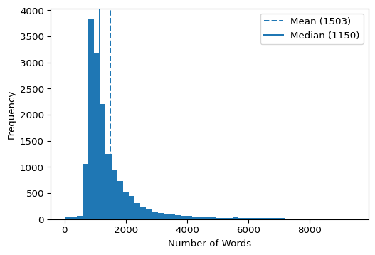
The distribution is right-skewed, as shown in the histogram. Most articles fall between 900–1600 words, which is typical for technology journalism and analytical reporting.
The long tail (up to ~9,300 words) likely represents:
- In-depth investigative pieces
- possible Policy papers
- and Long-form analysis
The relatively small gap between mean and median suggests the skew is present but not extreme.
5.2 Paragraph-Level Analysis
Chunks are critical for downstream NLP tasks such as Retrieval-Augmented Generation (RAG), embedding-based semantic search, and Knowledge Graph (KG) construction. While document-level analysis informs us about the overall corpus structure, chunk-level analysis determines whether the segmentation strategy is appropriate for modeling.
In this dataset, chunks correspond to individual paragraphs extracted from each article.
Code
media_has_chunk["chunk_length"] = media_has_chunk["chunked_content"].str.split().str.len()
media_has_chunk["chunk_length"].describe().round(0).astype(int)count 436065
mean 56
std 90
min 1
25% 27
50% 43
75% 64
max 7736
Name: chunk_length, dtype: int64Code
mean_len = media["doc_length"].mean()
median_len = media["doc_length"].median()
plt.figure(figsize=(6,4))
plt.hist(media["doc_length"].clip(upper=4000), bins=60)
plt.axvline(mean_len, linestyle='--', label=f"Mean ({mean_len:.0f})")
plt.axvline(median_len, linestyle='-', label=f"Median ({median_len:.0f})")
plt.title("Document Length Distribution (Clipped at 4000 Words)")
plt.xlabel("Number of Words")
plt.ylabel("Frequency")
plt.legend()
plt.show()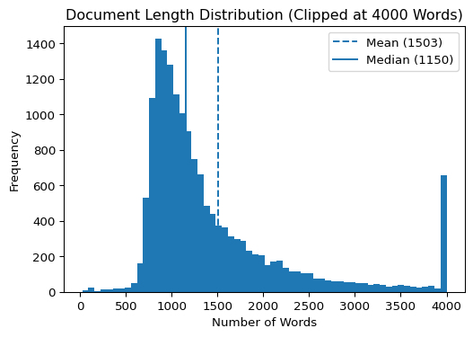
With a median of 43 words, chunks are relatively small. This suggests that while fine-grained retrieval is possible, semantic richness per chunk may be limited. For RAG applications, it may be beneficial to re-chunk paragraphs into larger segments (e.g., 200–400 words) to increase contextual density.
5.3 Vocabulary Exploration
Top Words (After Stopword Removal)
Vocabulary exploration helps us understand the lexical composition of the corpus. By examining word frequencies, vocabulary size, and lexical diversity after stopword removal, we can identify the dominant terms and assess how varied the language is across the AI media articles.
Code
from collections import Counter
all_tokens = media["tokens_no_stop"].explode()
word_counts = Counter(all_tokens)
word_counts.most_common(20)[('ai', 191713),
('data', 109995),
('new', 55422),
('like', 53301),
('company', 48311),
('time', 46205),
('use', 41695),
('technology', 38496),
('model', 37733),
('models', 36322),
('business', 31635),
('said', 31272),
('systems', 30204),
('companies', 30094),
('year', 29156),
('based', 28986),
('world', 27292),
('research', 27069),
('work', 26360),
('need', 25692)]Code
from wordcloud import WordCloud
import matplotlib.pyplot as plt
# Generate word cloud from frequency dictionary
wordcloud = WordCloud(
width=1200,
height=600,
background_color="white",
colormap="viridis"
).generate_from_frequencies(word_counts)
# Plot
plt.figure(figsize=(10,5))
plt.imshow(wordcloud, interpolation="bilinear")
plt.axis("off")
plt.title("Word Cloud of Most Frequent Terms in AI Media Corpus")
plt.show()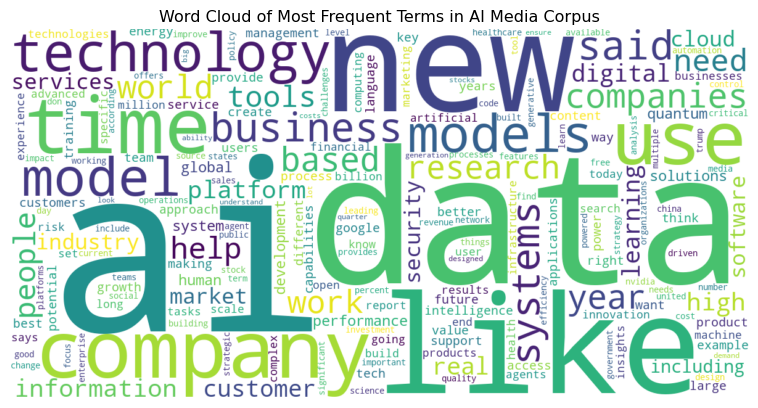
The word cloud confirms that the corpus is dominated by AI-related terminology such as “AI”, “model”, “data”, and “technology”, reflecting the dataset’s focus on developments in artificial intelligence.
Note
During vocabulary inspection, isolated tokens such as “s” and “t” were observed. These originate from contraction splitting (e.g., “it’s”, “don’t”) during tokenization. We went back to tokenization and an additional filtering based on token length was applied to remove such artifacts and improve vocabulary quality.
Vocabulary size
Code
vocab_size = len(word_counts)
print("Vocabulary size:", vocab_size)Vocabulary size: 144368The vocabulary analysis after stopword removal reveals a vocabulary size of 144,873 unique tokens across the corpus. This indicates a very large and diverse lexical space, which is expected given the dataset consists of thousands of news articles discussing different aspects of artificial intelligence, technology, policy, and industry developments.
Lexical Diversity
Code
total_tokens = len(all_tokens)
unique_tokens = len(set(all_tokens))
lexical_diversity = unique_tokens / total_tokens
print("Lexical diversity:", round(lexical_diversity, 4))Lexical diversity: 0.0109The lexical diversity score of 0.0109 represents the ratio between unique tokens and the total number of tokens in the corpus. In large text collections such as news corpora, lexical diversity values tend to be relatively low because many important domain terms (e.g., AI, model, data, technology, research) appear repeatedly across articles. This repetition reflects the shared terminology used when discussing developments in artificial intelligence.
Overall, the results indicate that the corpus contains both substantial vocabulary richness and strong thematic consistency. A large vocabulary size suggests that the dataset captures a wide range of topics and entities related to AI, while the relatively low lexical diversity is typical of large journalistic corpora where specialized terminology is frequently reused.
5.4 Articles per Domain
Code
top_domains = media["domain"].value_counts().head(20)
print(top_domains)domain
builtin 718
aijourn 637
venturebeat 608
marketbeat 548
thenewstack 496
towardsdatascience 493
theconversation 431
zacks 397
salesforce 387
gizmodo 357
hpcwire 353
thetimes 341
csis 337
aithority 334
techfundingnews 333
crn 289
siliconcanals 279
webfx 276
cnbc 255
technologyreview 243
Name: count, dtype: int64Code
top_domains.plot(kind="bar", figsize=(12,5))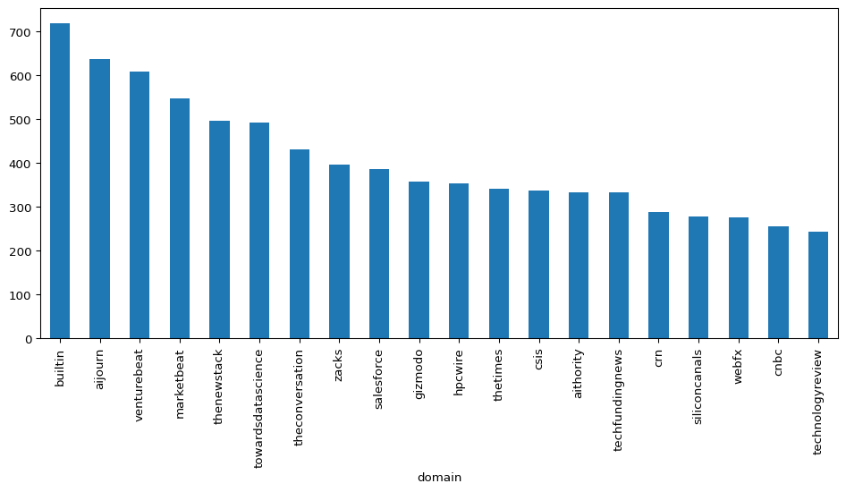
The domain distribution reveals that a small number of media outlets contribute a large portion of the articles. This indicates a certain level of source concentration, which may introduce editorial bias or thematic emphasis depending on the publishing outlets represented in the dataset.
Understanding this distribution is important when interpreting trends derived from the corpus.
5.5 Tag Distribution
The tag distribution highlights the main topics covered in the dataset. GenerativeAI appears most frequently, followed by tags such as Video, LargeLanguageModel, and Personalisation, indicating a strong focus on generative technologies and large language models. Other tags like OpenAI, ChatGPT, and Robotics show that the corpus also captures developments in specific AI systems and applications.
Code
#
top_tags = media_has_tags["tag"].value_counts().head(20)
plt.figure(figsize=(12,5))
top_tags.plot(kind="bar")
plt.title("Top Tags in AI Media Dataset")
plt.xlabel("Tag")
plt.ylabel("Number of Articles")
plt.xticks(rotation=45)
plt.show()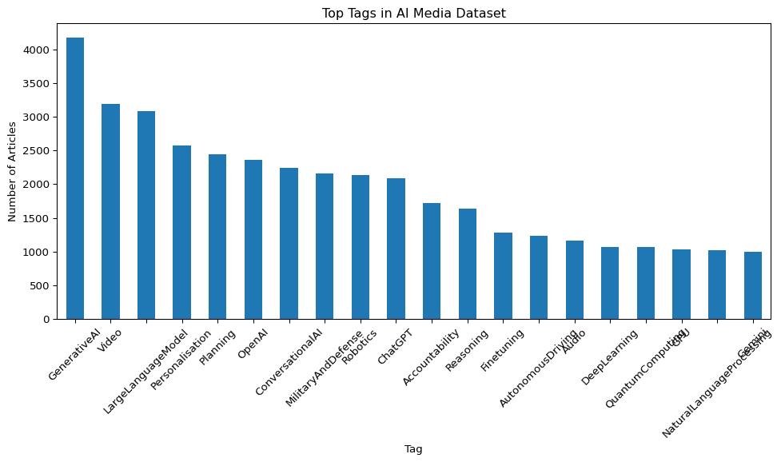
6 Sentiment Analysis
Sentiment analysis is a key technique for extracting the emotional tone from text. It is widely used in product reviews, social media monitoring, and — as in our case — media analysis.
Sentiment scores are typically expressed either as a continuous value between -1 (negative) and 1 (positive), or as discrete labels: negative, neutral, positive.
Our goal is to understand how AI is perceived in media discourse, which may serve as a proxy for market confidence and public perception of AI developments. Sentiment in news articles is inherently contextual and nuanced — isolated scores should therefore be interpreted with caution.
Given the unsupervised, highly contextual nature of the data, lexicon-based approaches would prove insufficient. We instead leverage transfer learning via a fine-tuned RoBERTa model (cardiffnlp/twitter-roberta-base-sentiment-latest), which delivers strong performance on short, opinionated text.
Since article lengths exceed most models’ token limits, we perform sentiment analysis at the chunk level and then aggregate scores to the article level. This also enables more granular, paragraph-level insights.
Code
model_path = "cardiffnlp/twitter-roberta-base-sentiment-latest"
sentiment_task = pipeline("sentiment-analysis", model=model_path, tokenizer=model_path)Taking a few examples to roughly test the model performance, we can see his successfuly labelling, as well as efficient inference time.
Performing the analysis on the entirety of the dataset would take a considerable amount of time. However, the runtime increase is proportional to the vectors of processed text length, and enable a fairly accurate estimation of the total runtime: ~7 hours.
Code
runtimes = pd.read_csv("notebook/runtimes.csv")
runtime = runtimes.runtime.values
sample_size = runtimes.sample_size.values
slope, intercept = np.polyfit(sample_size, runtime, 1)
extend_to = media_has_chunk.shape[0]
extended_samples = np.linspace(sample_size.min(), extend_to, 300)
extended_runtime = slope * extended_samples + intercept
sns.set_theme(style="whitegrid", context="talk")
plt.figure(figsize=(10, 6))
plt.scatter(sample_size, runtime,
color="#2E86C1",
s=80,
label="Measured Runtime",
zorder=3)
plt.plot(extended_samples, extended_runtime,
color="#E74C3C",
linewidth=3,
label="Linear Projection")
plt.axvspan(sample_size.max(), extend_to,
color="gray", alpha=0.1, label="Extrapolated Region")
plt.xlabel("Sample Size")
plt.ylabel("Runtime (seconds)")
plt.title("Runtime Scaling with Sample Size")
plt.legend()
plt.tight_layout()
plt.show():::{.callout-note collapse=“true”, summary=“Pipeline”}
Code
articles = media_has_chunk.chunked_content.values.tolist()
pred: List[dict] = sentiment_task(media_has_chunk.chunked_content.values.tolist(), truncation=True, max_length=512)
result: list[str] = [{"text": text, "label": y["label"], "score": y["score"]} for text, y in zip(articles, pred)]
sentiments = [res["label"] for res in result]
media_has_chunk["sentiment"] = sentiments
if "sentiment" in media_has_chunk.columns:
media_has_chunk.to_csv("data/processed/media_has_chunk.csv")
with open("notebook/sentiment_analysis_results.json", "w") as fb:
json.dump(result, fb):::
With chunk-level sentiment computed, we aggregate the results to the article level. Negative sentiment is mapped to -1, neutral to 0, and positive to 1.
Code
def convert_to_numerical(sentiment: str) -> int:
match sentiment:
case "positive":
return 1
case "neutral":
return 0
case "negative":
return -1
media_has_chunk["num_sentiment"] = media_has_chunk["sentiment"].apply(convert_to_numerical)
sentiment_per_media = media_has_chunk.groupby("media_id").num_sentiment.mean().reset_index()
media = media.drop(columns=["sentiment"], errors="ignore")
media = media.merge(sentiment_per_media, on="media_id", how="left").rename(columns={"num_sentiment": "sentiment"})With article-level sentiment scores in place, we can now explore how sentiment varies across tags and media domains.
Code
media_with_tag = media.merge(media_has_tags, on="media_id", how="left")Tags represent not only topics but also specific companies and products, making tag-level sentiment a useful proxy for public perception of particular technologies. Since some tags appear in very few articles, we filter to only those tags where the standard error of the mean falls below the 5th percentile — retaining only statistically reliable estimates.
The sentiment distribution is negatively skewed, with a tendency toward positive scores. This likely reflects the broadly optimistic framing of AI developments in media — performance promises and investment announcements are consistently rated positively by the model. However, since the distribution is not perfectly normal, the standard error is not a fully unbiased estimator and results should be interpreted accordingly.
Code
media_with_tag.sentiment.plot(kind="kde")
plt.tight_layout()
plt.title("Sentiment Score Distribution")
plt.show()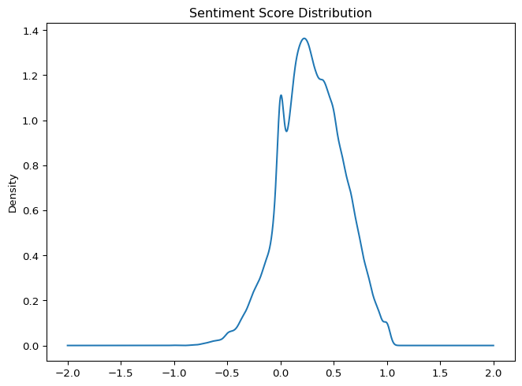
The following plot display the weighted sentiment score and also illustrate the impact of sample size on the results.
First, we observe that technologies such as ‘WordNet’ or ‘Simplilearn’ seem very well percieved by the public through the September 2024 to September 2025 period. Alternatively, ‘EleutherAI’ or ‘ClearviewAI’ display the opposite patterns, with a significantly low sentiment score, indicating that they haven’t been faring so well.
Secondly, we observe, with no real suprise that concepts such as ‘HighPerformanceComputing’ recieves a lot of positive attention lately. This is reflected by the general hyper-scaling trend as well as the massive investement in companies such as Nvidia or Intel. Alternatively, concepts such as ‘Personnalisation’ are also very well recieved. Seeing this concepts ranking among the best seen tags is a sign the market of using AI technologies for consumer benefits and automatization is booming. Further interpreting this, we could sign this as a positive sign for the open-source community of the AI technologies. Indeed, they efforts in making those technologies available to everyone and help the daily lifes of regular customers is paying.
On the contrary, concepts such as ‘MilitaryAndDefense’ and ‘Fairness’ have mitigated score. Indicating that those concepts are real public concerns with the recent advancement of AI technologies, and that improvement are still to be made. However, no real concepts seems to be majorily negatively seen, as least when focusing on the tags we’re the most certain about our estimates.
However, it is important that, since the distribution isn’t normally distributed, the standard error is not a unbiased estimator.
Code
# Compute the less biased metric
sentiment_per_tag = (
media_with_tag
.groupby("tag")
.agg(
sent_mean=("sentiment", "mean"),
sent_sde=("sentiment", "sem")
)
)
sentiment_per_tag = sentiment_per_tag.dropna()
alpha = sentiment_per_tag.sent_sde.quantile(0.05)
sentiment_per_tag = sentiment_per_tag.loc[sentiment_per_tag.sent_sde <= alpha]
# Get the best and worse tags
top_5_tag = sentiment_per_tag.sort_values(by="sent_mean", ascending=False).iloc[:5]
worse_5_tag = sentiment_per_tag.sort_values(by="sent_mean", ascending=True).iloc[:5]
# Plot
pd.concat([top_5_tag, worse_5_tag], axis=0).plot(kind="bar", y="sent_mean")
plt.title("Weighted Sentiment for Top/Bottom 5 Tags")
plt.tight_layout()
plt.show()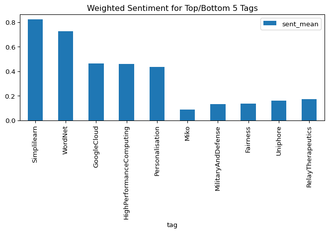
Interestingly, we could a similar analysis for the media themselves. Is there any media posting more positive news that negative news? This could potentially be a sign of a biased media or poor journalism quality. Indeed, a media should strive to be neutral, while avoiding to be biased to towards extremes, thus publishing news for the relevance, whether they have a positive or negative connotation.
Looking at the following plot, again filtered by a standard errors below the 5th percentile, we can see that some media, such as ‘aifund’ or ‘smmt.co’ are linked with a particularly positive sentiment. Taking into account the current hype for those technologies, a mean score of 0.6 and over 0.8 is high, indicating a high chance that their news don’t cover the full spectrum of events.
Alternatively, we can also observe that there is no media biased towards negative news, which is a good thing, as spreading fear unnecessarily isn’t good.
However, some media such as “vogue”, or very popular media such as ‘morningstart’ have a much more neutral coverage, indicating their overall neutral position and balanced news coverage. This is a sign for trust in those media.
Code
# Compute the less biased metric
sentiment_per_domain = (
media_with_tag
.groupby("domain")
.agg(
sent_mean=("sentiment", "mean"),
sent_sde=("sentiment", "sem")
)
)
alpha = sentiment_per_domain.sent_sde.quantile(0.05)
sentiment_per_domain = sentiment_per_domain.loc[sentiment_per_domain.sent_sde <= alpha]
# Get the best and worse domains
top_5_domain = sentiment_per_domain.sort_values(by="sent_mean", ascending=False).iloc[:5]
worse_5_domain = sentiment_per_domain.sort_values(by="sent_mean", ascending=True).iloc[:5]
# Plot
pd.concat([top_5_domain, worse_5_domain], axis=0).plot(kind="bar", y="sent_mean")
plt.title("Weighted Sentiment for Top/Bottom 5 Media")
plt.tight_layout()
plt.show()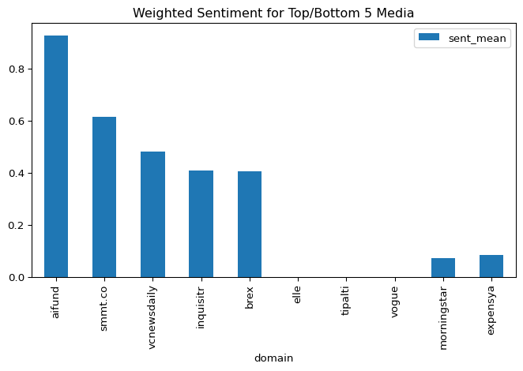
7 Temporal Analysis
Articles per Month
The following chart shows the number of articles published per month across the dataset period (September 2024 – August 2025).
Code
# Prepare monthly article counts
media["month"] = media["date"].dt.to_period("M")
# Ensure media_with_tag includes month column
media_with_tag = media.merge(media_has_tags, on="media_id", how="left")
monthly_counts = media.groupby("month").size().reset_index(name="count")
monthly_counts["month_str"] = monthly_counts["month"].astype(str)
# Plot
fig, ax = plt.subplots(figsize=(12, 5))
ax.bar(monthly_counts["month_str"], monthly_counts["count"], color="steelblue")
ax.set_title("Number of Articles per Month", fontsize=14)
ax.set_xlabel("Month")
ax.set_ylabel("Number of Articles")
plt.xticks(rotation=45, ha="right")
plt.tight_layout()
plt.show()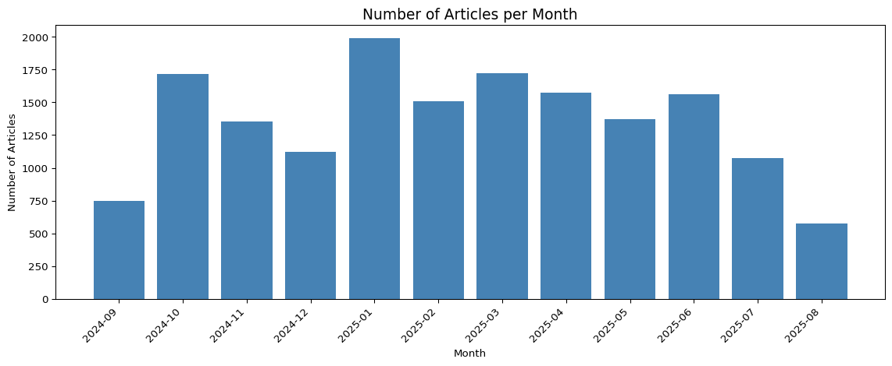
The dataset covers September 2024 to August 2025, with a relatively consistent article volume of 1,100–1,700 per month. The lower counts in September 2024 and August 2025 are expected, as these months are only partially covered by the dataset.
January 2025 stands out as the peak month with ~2,000 articles, which aligns with two major AI events happening in quick succession: the release of DeepSeek-R1 (January 20), a Chinese open-source model that matched OpenAI’s o1 at a fraction of the cost, causing Nvidia’s stock to drop nearly 17%; and the announcement of the Stargate Project (January 21), a $500 billion AI infrastructure initiative by OpenAI, SoftBank, and Oracle. These back-to-back events generated exceptional media coverage across the AI landscape.
Top 15 Tags over Time
The following heatmap illustrates how the 15 most frequent tags are distributed across months, revealing event-driven peaks and persistent background themes.
Code
# Get top 15 most frequent tags
top_tags = media_has_tags["tag"].value_counts().head(15).index.tolist()
# Merge media with tags and filter top tags
media_tags = media.merge(media_has_tags, on="media_id", how="left")
media_tags = media_tags[media_tags["tag"].isin(top_tags)]
# Count tag occurrences per month
media_tags["month"] = media_tags["date"].dt.to_period("M")
heatmap_data = media_tags.groupby(["month", "tag"]).size().unstack(fill_value=0)
heatmap_data.index = heatmap_data.index.astype(str)
# Plot
fig, ax = plt.subplots(figsize=(16, 8))
sns.heatmap(heatmap_data.T, cmap="YlOrRd", linewidths=0.5, ax=ax)
ax.set_title("Top 15 Tags over Time", fontsize=14)
ax.set_xlabel("Month")
ax.set_ylabel("Tag")
plt.xticks(rotation=45, ha="right")
plt.tight_layout()
plt.show()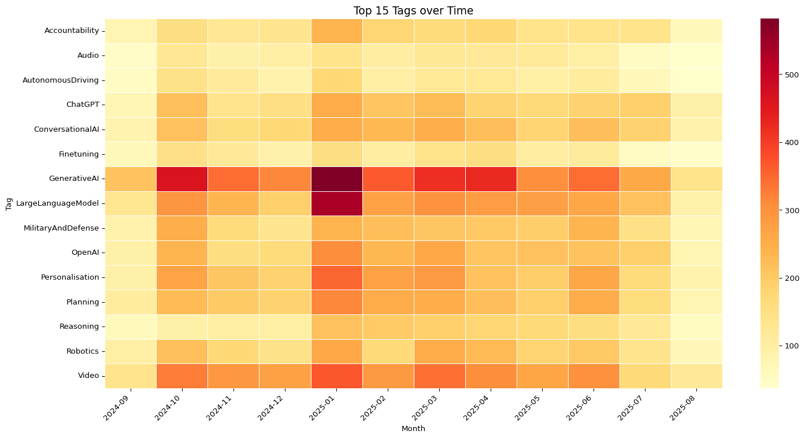
The heatmap shows clear event-driven spikes on top of stable background topics. GenerativeAI dominates every month, confirming its centrality in AI media coverage. LargeLanguageModel (and also Video) peaks sharply in January 2025, aligning with major releases and announcements (e.g., DeepSeek-R1 and OpenAI’s Sora coverage). In contrast, Finetuning, Audio, and Accountability stay fairly steady, indicating persistent themes rather than short-lived hype.
Top 5 Tags over Time
The following line chart tracks the monthly evolution of the 5 most frequent tags, allowing for a more precise comparison of their relative prominence over time.
Code
# Get top 5 most frequent tags overall
top_5_tags = media_has_tags["tag"].value_counts().head(5).index.tolist()
# Filter and count per month
media_tags_top5 = media_tags[media_tags["tag"].isin(top_5_tags)]
line_data = media_tags_top5.groupby(["month", "tag"]).size().unstack(fill_value=0)
line_data.index = line_data.index.astype(str)
# Plot
fig, ax = plt.subplots(figsize=(14, 6))
for tag in top_5_tags:
ax.plot(line_data.index, line_data[tag], marker="o", label=tag)
ax.set_title("Top 5 Tags over Time", fontsize=14)
ax.set_xlabel("Month")
ax.set_ylabel("Number of Articles")
ax.legend(title="Tag", bbox_to_anchor=(1.05, 1), loc="upper left")
plt.xticks(rotation=45, ha="right")
plt.tight_layout()
plt.show()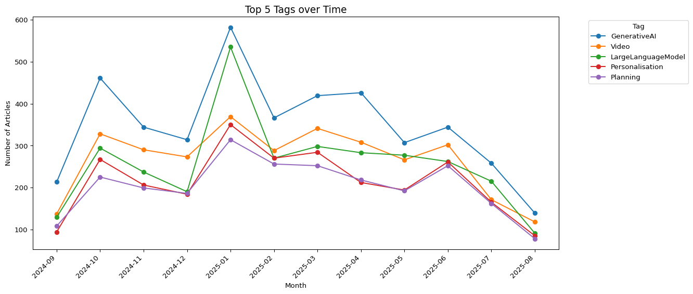
The heatmap shows clear event-driven spikes on top of stable background topics. GenerativeAI dominates every month, confirming its centrality in AI media coverage. LargeLanguageModel (and also Video) peaks sharply in January 2025, aligning with major releases and announcements (e.g., DeepSeek-R1 and OpenAI’s Sora coverage). In contrast, Finetuning, Audio, and Accountability stay fairly steady, indicating persistent themes rather than short-lived hype.
We now extend the temporal analysis by adding sentiment signals over time.
Chunk sentiment distribution over time
This plot tracks how the monthly share of negative, neutral, and positive chunks evolves over the observation period.
Code
chunks_with_month = media_has_chunk.merge(
media_with_tag[["media_id", "month"]].drop_duplicates("media_id"),
on="media_id",
how="left"
)
dist = (
chunks_with_month
.dropna(subset=["month", "sentiment"])
.groupby(["month", "sentiment"])
.size()
.unstack(fill_value=0)
.reindex(columns=["negative", "neutral", "positive"], fill_value=0)
.sort_index()
)
dist_share = dist.div(dist.sum(axis=1), axis=0)
x = dist_share.index.to_timestamp() if hasattr(dist_share.index, "to_timestamp") else dist_share.index
# Colors: negative = orange, neutral = gray, positive = green
colors = {
"negative": "orange",
"neutral": "gray",
"positive": "green",
}
fig, ax = plt.subplots(figsize=(14, 6))
ax.stackplot(
x,
dist_share["negative"],
dist_share["neutral"],
dist_share["positive"],
labels=["negative", "neutral", "positive"],
colors=[colors["negative"], colors["neutral"], colors["positive"]],
)
ax.set_title("Chunk Sentiment Distribution over Time (Monthly Share)", fontsize=14)
ax.set_xlabel("Month")
ax.set_ylabel("Share of Chunks")
ax.legend(title="Sentiment", bbox_to_anchor=(1.05, 1), loc="upper left")
plt.xticks(rotation=45, ha="right")
plt.tight_layout()
plt.show()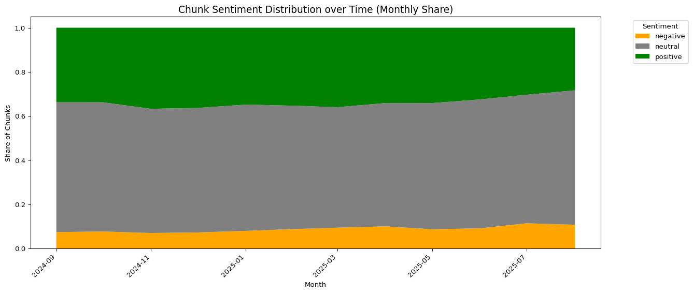
Neutral content dominates throughout, while positive remains the second-largest share. Negative sentiment stays comparatively small, with only a slight uptick toward mid/late 2025.
Sentiment over time for the top 5 tags
This plot compares monthly mean sentiment for the five most frequent tags to highlight which topics are consistently viewed more positively.
Code
# Add month to media_with_tag (use timestamp for proper time axis)
media_with_tag["month"] = pd.to_datetime(media_with_tag["date"]).dt.to_period("M").dt.to_timestamp()
# Get top 5 tags from the same table used for plotting (robust against mismatches)
top_5_tags = media_with_tag["tag"].value_counts().head(5).index.tolist()
# Filter and compute mean sentiment per tag per month
sentiment_over_time = (
media_with_tag[media_with_tag["tag"].isin(top_5_tags)]
.groupby(["month", "tag"])["sentiment"]
.mean()
.unstack()
.sort_index()
)
# Plot
fig, ax = plt.subplots(figsize=(14, 6))
for tag in top_5_tags:
if tag in sentiment_over_time.columns:
ax.plot(sentiment_over_time.index, sentiment_over_time[tag], marker="o", label=tag)
ax.set_title("Sentiment over Time – Top 5 Tags", fontsize=14)
ax.set_xlabel("Month")
ax.set_ylabel("Mean Sentiment Score")
ax.axhline(0, color="gray", linestyle="--", linewidth=0.8)
ax.legend(title="Tag", bbox_to_anchor=(1.05, 1), loc="upper left")
plt.xticks(rotation=45, ha="right")
plt.tight_layout()
plt.show()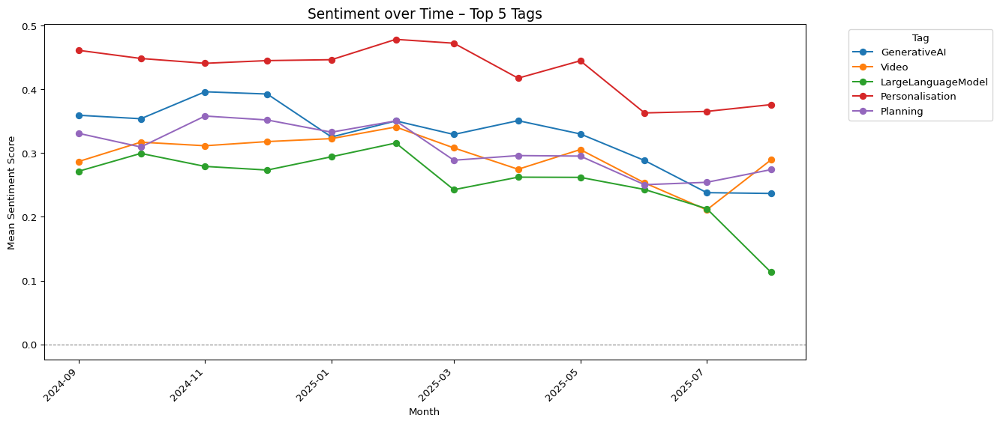
All top tags remain net-positive overall, but several show a gradual decline after early 2025. Personalisation stands out as the most consistently positive series across months.
DeepSeek vs. ChatGPT, Claude, Gemini, and CoPilot
This plot benchmarks DeepSeek’s monthly mean sentiment against major LLM competitors to contextualize its sentiment trajectory.
Code
compare_tags = ["DeepSeek", "ChatGPT", "Claude", "Gemini", "CoPilot"]
sentiment_over_time = (
media_with_tag[media_with_tag["tag"].isin(compare_tags)]
.groupby(["month", "tag"])["sentiment"]
.mean()
.unstack()
.sort_index()
)
x = sentiment_over_time.index.to_timestamp() if hasattr(sentiment_over_time.index, "to_timestamp") else sentiment_over_time.index
fig, ax = plt.subplots(figsize=(14, 6))
for tag in compare_tags:
ax.plot(x, sentiment_over_time[tag], marker="o", label=tag)
ax.set_title("Sentiment-Entwicklung über Zeit: DeepSeek vs. ChatGPT/Claude/Gemini/CoPilot", fontsize=14)
ax.set_xlabel("Month")
ax.set_ylabel("Mean Sentiment Score")
ax.axhline(0, color="gray", linestyle="--", linewidth=0.8)
ax.legend(title="Tag", bbox_to_anchor=(1.05, 1), loc="upper left")
plt.xticks(rotation=45, ha="right")
plt.tight_layout()
plt.show()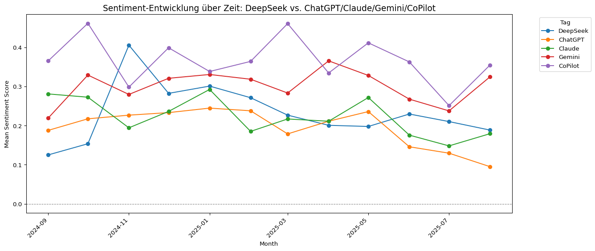
DeepSeek shows a sharp positive spike around late 2024 followed by normalization into the mid range. ChatGPT trends downward toward 2025, while CoPilot and Gemini are generally higher and more stable than the rest.
8 Topics Modelling
Code
import pandas as pd
import os
# Load cleaned data
media = pd.read_csv("data/processed/media_cleaned.csv")
media_has_chunk = pd.read_csv("data/processed/media_has_chunk_cleaned.csv")
media_has_tags = pd.read_csv("data/processed/media_has_tags_cleaned.csv")
# Parse date
media["date"] = pd.to_datetime(media["date"])
media["month"] = media["date"].dt.to_period("M")
# Ensure figures directory exists
os.makedirs("notebook/figures", exist_ok=True)
print(f"Articles: {len(media)}")
print(f"Chunks: {len(media_has_chunk)}")
print(f"Tags: {len(media_has_tags)}")Articles: 16317
Chunks: 436065
Tags: 84326We use the all-MiniLM-L6-v2 model from the sentence-transformers library to generate dense vector representations (embeddings) of the article content. This model is a compact version of BERT that provides efficient and meaningful sentence embeddings, making it suitable for large-scale text analysis.
Code
from sentence_transformers import SentenceTransformer
import numpy as np
# Pre-calculate embeddings (only once) — run manually, takes ~10-25 min on CPU
embedding_model = SentenceTransformer("all-MiniLM-L6-v2")
embeddings = embedding_model.encode(
media["full_content"].tolist(),
show_progress_bar=True
)
# Save to disk
np.save("data/processed/embeddings.npy", embeddings)
print(f"Embeddings shape: {embeddings.shape}")Now we have the embeddings, we can proceed to topic modeling using BERTopic, which combines UMAP for dimensionality reduction and HDBSCAN for clustering. This approach allows us to identify coherent topics within the news articles based on their semantic content.
We follow the BERTopic best practices by configuring each component of the pipeline explicitly before training, allowing full control over the topic modeling process.
UMAP reduces the 384-dimensional embeddings to 5 dimensions before clustering. We set n_neighbors=15 as a balanced default between local and global structure, and random_state=42 to ensure reproducible topic assignments across runs.
HDBSCAN clusters the reduced embeddings into topics. min_cluster_size=30 requires at least 30 articles per topic, which avoids overly granular topics given our dataset size of 16k articles. This is the key parameter to tune if the number of topics is too high or too low.
CountVectorizer determines the representative words per topic. We enable bigrams (ngram_range=(1, 2)) to capture meaningful two-word expressions such as “generative ai” or “language model”, and set min_df=2 to filter out rare terms that would not generalize across articles.
Code
from umap import UMAP
from hdbscan import HDBSCAN
from sklearn.feature_extraction.text import CountVectorizer
from bertopic import BERTopic
import numpy as np
import copy
# Load pre-calculated embeddings
embedding_model = SentenceTransformer("all-MiniLM-L6-v2")
embeddings = np.load("data/processed/embeddings.npy")
# UMAP - dimensionality reduction
umap_model = UMAP(n_neighbors=15, n_components=5, min_dist=0.0, metric='cosine', random_state=42)
# HDBSCAN - clustering
hdbscan_model = HDBSCAN(min_cluster_size=30, metric='euclidean', cluster_selection_method='eom', prediction_data=True)
# CountVectorizer - topic representation
vectorizer_model = CountVectorizer(stop_words="english", min_df=2, ngram_range=(1, 2))
# BERTopic
topic_model = BERTopic(
embedding_model=embedding_model,
umap_model=umap_model,
hdbscan_model=hdbscan_model,
vectorizer_model=vectorizer_model,
top_n_words=10,
verbose=True
)
topics, probs = topic_model.fit_transform(media["full_content"].tolist(), embeddings)
print(f"Number of topics: {len(set(topics))}")
# Reduce to 20 main topics
topic_model_reduced = topic_model.reduce_topics(
media["full_content"].tolist(),
nr_topics=21
)
# Save model
topic_model_reduced.save("data/processed/bertopic_model")
print("Model saved.")Code
from umap import UMAP
from hdbscan import HDBSCAN
from sklearn.feature_extraction.text import CountVectorizer
from bertopic import BERTopic
import numpy as np
import copy
topic_model_reduced = BERTopic.load("data/processed/bertopic_model")With 72 initial topics, the model produces more granular results than needed for interpretation. BERTopic allows merging similar topics without retraining, enabling us to consolidate the topic structure while retaining the original embeddings and semantic relationships. We reduce the number of topics to 21 (20 main topics + 1 for outliers).
Code
# Save figures for all BERTopic visualizations — run manually once
import kaleido # pip install kaleido
topic_labels = {
-1: "Outliers / Misc.",
0: "AI News & Tech (General)",
1: "Search, SEO & Marketing",
2: "Energy, Power & Robotics",
3: "ML Models & Training Data",
4: "Stocks & Market Ratings",
5: "US Politics & China Relations",
6: "Quantum Computing",
7: "AI in Media & Content",
8: "AI in Education (Students/Learning)",
9: "Consumer Tech (Apple/5G/Devices)",
10: "Defense & War (Ukraine/Russia)",
11: "Arts & Exhibitions (Museums/Film)",
12: "Gaming & Players",
13: "Earnings & Quarterly Reports",
14: "Facial Recognition & Surveillance",
15: "UK Government & Public Services (NHS)",
16: "Weather, Climate & Solar",
17: "KPMG / Corporate Communications",
18: "Agent Protocols (MCP/A2A/Servers)",
19: "Biodiversity & Wildlife Conservation",
}
topic_model_reduced.set_topic_labels(topic_labels)
# Barchart
fig_bar = topic_model_reduced.visualize_barchart(top_n_topics=21, custom_labels=True)
fig_bar.write_image("notebook/figures/topic_barchart.png", scale=2)
# Topic similarity map
fig_topics = topic_model_reduced.visualize_topics()
fig_topics.write_image("notebook/figures/topic_similarity.png", scale=2)
# Frequency bar chart
import matplotlib.pyplot as plt
topic_info = topic_model_reduced.get_topic_info().copy()
topic_info = topic_info[topic_info["Topic"] != -1].copy()
topic_info["Label"] = topic_info["Topic"].map(topic_labels)
topic_info = topic_info.sort_values("Count", ascending=True)
fig, ax = plt.subplots(figsize=(10, 8))
ax.barh(topic_info["Label"], topic_info["Count"])
ax.set_title("Topic Frequencies (Reduced Model)")
ax.set_xlabel("Number of Articles")
ax.set_ylabel("")
plt.tight_layout()
fig.savefig("notebook/figures/topic_frequencies.png", dpi=150, bbox_inches="tight")
plt.show()
# Topics over time
timestamps = media["date"].tolist()
topics_over_time = topic_model_reduced.topics_over_time(
media["full_content"].tolist(),
timestamps,
nr_bins=12
)
import pickle
with open("data/processed/topics_over_time.pkl", "wb") as f:
pickle.dump(topics_over_time, f)
top_topics = [0, 1, 2, 3, 4, 5, 6, 7, 8, 9]
tot_filtered = topics_over_time[topics_over_time["Topic"].isin(top_topics)]
tot_pivot = tot_filtered.pivot(index="Timestamp", columns="Topic", values="Frequency")
tot_pivot.columns = [topic_labels[t] for t in tot_pivot.columns]
fig2, ax2 = plt.subplots(figsize=(14, 6))
for col in tot_pivot.columns:
ax2.plot(tot_pivot.index, tot_pivot[col], marker="o", markersize=3, label=col)
ax2.set_title("Topics over Time", fontsize=14)
ax2.set_xlabel("Month")
ax2.set_ylabel("Frequency")
ax2.legend(bbox_to_anchor=(1.05, 1), loc="upper left", fontsize=8)
plt.xticks(rotation=45, ha="right")
plt.tight_layout()
fig2.savefig("notebook/figures/topics_over_time.png", dpi=150, bbox_inches="tight")
plt.show()
print("All figures saved.")The 20 main topics identified by the model can be labeled based on their most representative words and the underlying themes they capture. This labeling process is subjective and relies on interpreting the top words and the articles associated with each topic.
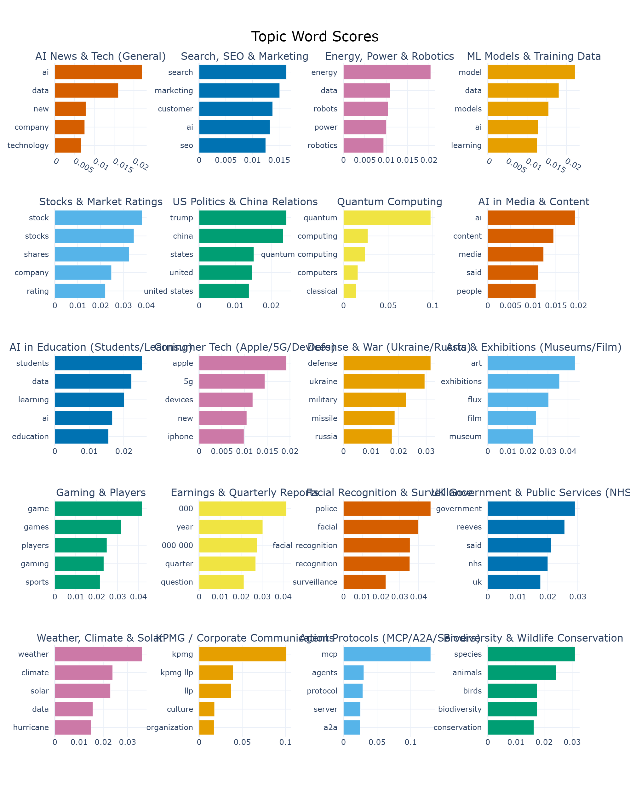
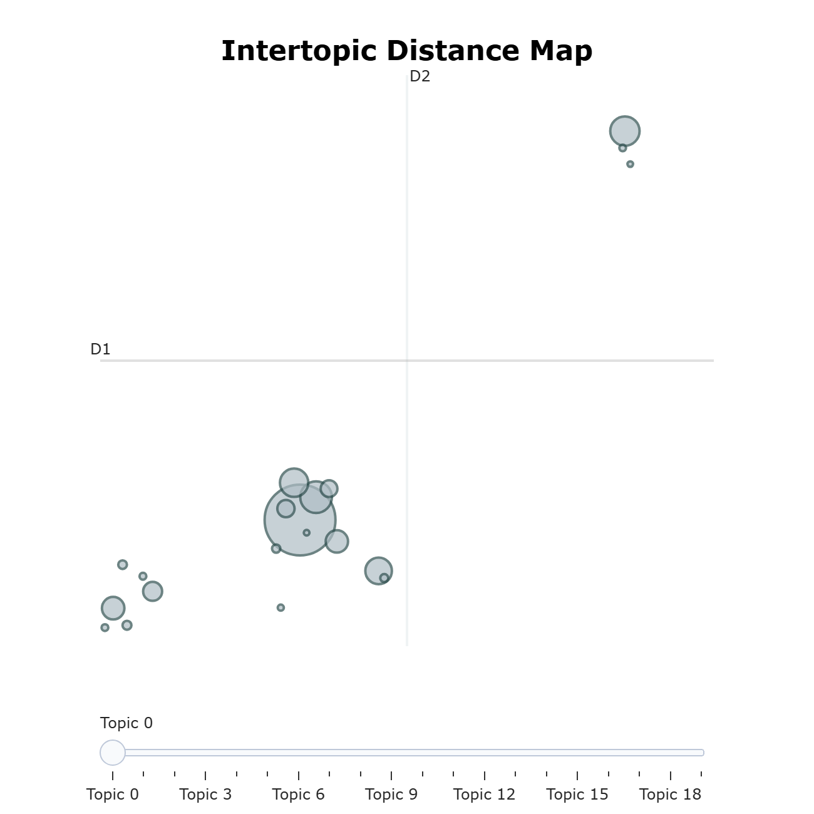
Now that we have a good understanding of the main topics, we can look at their frequencies and how they relate to each other.

Loading the topics over time data and visualizing the temporal evolution of the main topics.
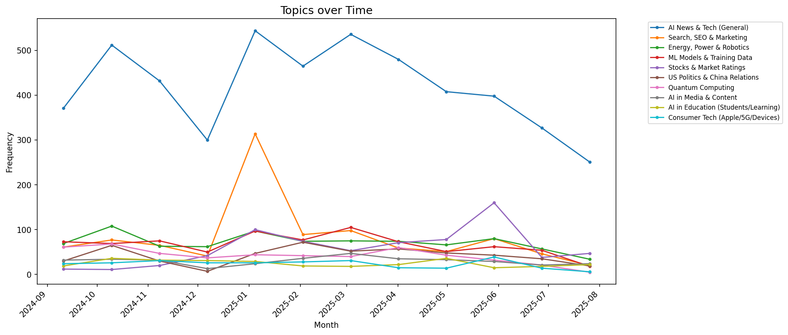
Using BERTopic with pre-calculated sentence embeddings, UMAP dimensionality reduction, and HDBSCAN clustering, we identified 72 initial topics which were subsequently reduced to 20 coherent themes. These span technical domains such as ML Models & Training Data, Quantum Computing, and Agent Protocols, applied areas like Healthcare, Autonomous Vehicles, and Cybersecurity, and broader societal themes including AI Regulation, Stocks & Market Ratings, and US Politics & China Relations.
The topics over time confirm that AI News & Tech (General) dominates throughout the dataset period, with a notable spike in Search, SEO & Marketing in January 2025.
9 Entities and Relationship Extraction
Previous section focused on explorations and trends analysis. This section builds on-top of them, extracting the main entities of the news articles and their relationships. Those extracted information will be the core components of our knowledge graph.
Since our knowledge needs to represent the articles content and map it faithfully, let’s have a look at the main entities present in the articles.
9.1 Entities Distribution
Code
import spacy
import numpy as np
from typing import List
import time
import re
from collections import Counter
import pprint
nlp = spacy.load("en_core_web_trf")Using spaCy built-in entity recognizer, we can get an generally overview that the main entities that the articles contains, as well as potential relationships.
Code
# Source - https://stackoverflow.com/a/70188495
# Posted by aab
# Retrieved 2026-02-26, License - CC BY-SA 4.0
entities = {ent: spacy.explain(ent) for ent in nlp.get_pipe("ner").labels}
pprint.pp("List of recognized entities by spacY and their description:")
pprint.pp(entities)Running the following multiple times, we observe that organizations (ORG), products (PRODUCT), persons (PERSON) and dates (DATE) consistently rank among the most present entities. They are followed by numerical values such as money (MONEY) or percentages (PERCENT). Alternatively, location, such as cities or countries are also well-documented (“GPE”).
Without context, it hard to know whether persons are are public figures, researchers, CEO, or even the author himself. Organizations ORG are mostly be public institutions, such as universities, or privates companies.
Products are most often AI products or model name, such as “Claude 3.5”, while
Overall, we retain four major entity types: persons, organizations, products, and countries. The remaining entity types — such as money amounts and dates — serve as supplementary attributes enriching entities and their relationships (e.g., funding amounts or publication dates).
Code
list_articles_content = media.full_content.values
np.random.seed(25)
sample_articles = np.random.choice(list_articles_content, size=30)
sample_content = "".join(sample_articles)
docs = nlp(sample_content)
ent_list = [token.ent_type_ for token in docs if token.ent_type != ""]
for ent, count in Counter(ent_list).most_common(20):
print(f"{ent}: {count}")Code
mapping = {token.text: token.ent_type_ for token in docs[:10] if token.ent_type_ != ""}
pprint.pp(mapping)Combining those entities with the articles data that we have: publisher and date of publications and tags, we can effectively map trends and AI research developement.
Code
import langextract as lx
import textwrap
# 1. Define the prompt and extraction rules
prompt = textwrap.dedent("""\
Extract entities such as organizations name, products such as AI models, persons and countries or locations.
Provide meaningful attributes for each entity to add context.
For each entities, extract their relationships with each other.
A extraction of class "relationship" must always relate to 2 entities minimum.
Use exact text for extractions. Do not paraphrase or overlap entities.
""")
# 2. Provide a high-quality example to guide the model
examples = [
lx.data.ExampleData(
text="Carnegie Mellon University’s new Robotics Innovation Center (RIC) has signed robotics company FieldAI as its first corporate tenant ahead of the facility’s formal opening in February 2026, embedding the AI-driven robotics unicorn into a 2,500 sq ft lab to advance physical AI and real-world robot deployment in complex environments",
extractions=[
lx.data.Extraction(
extraction_class="entity",
extraction_text="Carnegie Mellon University",
attributes={"type": "university"}
),
lx.data.Extraction(
extraction_class="entity",
extraction_text="new Robotics Innovation Center (RIC)",
attributes={"type": "research_center"}
),
lx.data.Extraction(
extraction_class="relationship",
extraction_text="new Robotics Innovation Center (RIC)",
attributes={"type": "affiliation", "party": ["Carnegie Mellon University", "Robotics Innovation Center (RIC)"], "money_amount": "unkown", "beneficiary": "unkown"}
),
lx.data.Extraction(
extraction_class="entity",
extraction_text="FieldAI",
attributes={"type": "company"}
),
lx.data.Extraction(
extraction_class="relationship",
extraction_text="has signed robotics company FieldAI as its first corporate tenant in February 2026",
attributes={"type": "partnership", "date": "February 2026", "party": ["Carnegie Mellon University", "FieldAI"], "money_amount": "unkown", "beneficiary": "FieldAI" }
),
]
),
lx.data.ExampleData(
text="Robotics startup Figure AI Inc. exceeded $1 billion in Series C funding at a $39 billion post-money valuation in September 2025, enabling it to scale production of its AI-powered humanoid robots (including Figure 02 and Figure 03) and expand the Helix embodied-intelligence platform with major investors such as NVIDIA, Intel Capital, and Brookfield Asset Management.",
extractions=[
lx.data.Extraction(
extraction_class="entity",
extraction_text="Figure AI Inc.",
attributes={"type": "company"}
),
lx.data.Extraction(
extraction_class="entity",
extraction_text="its AI-powered humanoid robots",
attributes={"type": "product", "owned_by": "Figure AI Inc."}
),
lx.data.Extraction(
extraction_class="entity",
extraction_text="Helix embodied-intelligence platform",
attributes={"type": "product", "owned_by": "Figure AI Inc.", "product_name": "Helix embodied-intelligence platform"}
),
lx.data.Extraction(
extraction_class="entity",
extraction_text="NVIDIA",
attributes={"type": "company"}
),
lx.data.Extraction(
extraction_class="entity",
extraction_text="Intel Capital",
attributes={"type": "company"}
),
lx.data.Extraction(
extraction_class="entity",
extraction_text="Brookfield Asset Management",
attributes={"type": "company"}
),
lx.data.Extraction(
extraction_class="relationship",
extraction_text="exceeded $1 billion in Series C funding",
attributes={"type": "partnership", "party": ["Figure AI Inc", "NVIDIA", "Intel Capital", "Brookfield Asset Management"], "money_amount": "1000000000", "beneficiary": "Figure AI Inc"}
),
]
),
lx.data.ExampleData(
text="Google announced it is folding its AI robotics project Intrinsic back into the parent company as a dedicated group aligned with Google DeepMind to accelerate development of AI models like Gemini Robotics for physical control systems, marking a strategic shift to unify robotics software and embodied AI under core Alphabet AI teams",
extractions=[
lx.data.Extraction(
extraction_class="entity",
extraction_text="Google",
attributes={"type": "company"}
),
lx.data.Extraction(
extraction_class="entity",
extraction_text="its AI robotics project Intrinsic",
attributes={"type": "product", "owned_by": "Figure AI Inc.", "product_name": "Intrinsic"}
),
lx.data.Extraction(
extraction_class="entity",
extraction_text="Google DeepMind",
attributes={"type": "research_group", "owned_by": "Google"}
),
lx.data.Extraction(
extraction_class="entity",
extraction_text="accelerate development of AI models like Gemini Robotics",
attributes={"type": "product", "owned_by": "Google", "product_name": "Gemini Robotics"}
),
]
)
]For a easily evaluable test case, let’s take a small article using a lightweight open-source model. On the first try, the model detected entities and relationships mostly successfully, with a few detected entities bringing few information. Examples are isolated “financial_amount” extraction, that can be bound to no other entities.
That said, isolated extracted entities could be removed and not taken into account when constructing the graph.
Code
media["content_length"] = media.full_content.str.len()
sample = media.sort_values(by="content_length", ascending=True).reset_index().iloc[5]
# The input text to be processed
input_text = sample.full_content
print("**Article's Content:** \n", input_text)
# Run the extraction
result = lx.extract(
text_or_documents=input_text,
prompt_description=prompt,
examples=examples,
model_id="gemma3:27b", # Automatically selects Ollama provider
model_url="http://localhost:11434",
fence_output=False,
use_schema_constraints=False
)Code
articles = media.loc[:, ["media_id", "full_content"]].sample(n=400)
extracted_documents: List[dict] = []
count = -1
for i, (media_id, text) in articles.iterrows():
count += 1
print(f"Article {count} / 399")
try:
result = extract(text)
extracted_documents.append(
{
"media_id": media_id,
"extraction": result
}
)
except Exception as error:
print(f"Error: {error}")
continue
with open("notebook/langextract_extraction_results.pkl", "wb") as fb:
pickle.dump(extracted_documents, fb)Code
from src.lib import langextract_to_json
json_annotations: List[dict] = []
for doc in documents:
flattened_extraction = langextract_to_json(
doc["media_id"], doc["extraction"]
)
json_annotations.extend(flattened_extraction)
with open(
"data/processed/langchain_extractions_json.pkl", "wb"
) as file:
pickle.dump(json_annotations, file)Code
with open("data/processed/langextract_extractions_json.pkl", "rb") as file:
extract = pickle.load(file)9.2 Extraction Exploration
Out of all the entities extracted, the most common entities extracted revolved around Google and related search team or product, such as Google DeepMind, Gemini Robotics or Intrinsic. Unsurprisingly, China and United States (or U.S.) also appear very often the ‘AI-race’ between the USA and China, is a term mentioned, at least in the Western part of the world.
Interestingly, Russia is also a entity that appears often, although they seems relatively quiet in the AI space.
Code
entities_counts = Counter([ex["entity"]["entity_text"] for ex in extract if "entity" in ex.keys()])
n_unique_entities = len(entities_counts.keys())
print("Total Amount of Unique Entities: ", n_unique_entities)
print("Total Amount of Extracted Entities: ", entities_counts.total())
print("Top 20 - Most Common Entities: ")
for name, count in entities_counts.most_common(20):
print(f" + {name}: {count}")Total Amount of Unique Entities: 16223
Total Amount of Extracted Entities: 26205
Top 20 - Most Common Entities:
+ Google: 912
+ Gemini Robotics: 871
+ Google DeepMind: 796
+ AI models like Gemini Robotics: 162
+ its AI robotics project Intrinsic: 160
+ AI: 155
+ China: 111
+ ChatGPT: 89
+ United States: 85
+ OpenAI: 82
+ artificial intelligence: 62
+ Microsoft: 59
+ Alphabet AI teams: 56
+ Nvidia: 50
+ U.S.: 43
+ NVIDIA: 42
+ AI models: 39
+ Russia: 34
+ data science: 33
+ healthcare: 32As the amount of diversed entities extracted is high, we expect the co-occurence matrix to be very sparse. Moreover, some entites are simply written in a different way, contributing to the sparsity effect, such as ‘NVIDIA’ and ‘Nvidia Corp.’ Additionnaly, as we could expect the distribution of entities across media is akin to a power-law distribution.
Code
fig, ax = plt.subplots()
pd.Series(entities_counts).sort_values(ascending=False).plot(kind="line", ax=ax)
ax.tick_params("x", rotation=45)
ax.set_title("Extracted Entities Distribution (N_articles=400)")
ax.set_ylabel("Count")
ax.set_xlabel("Entities")
plt.show()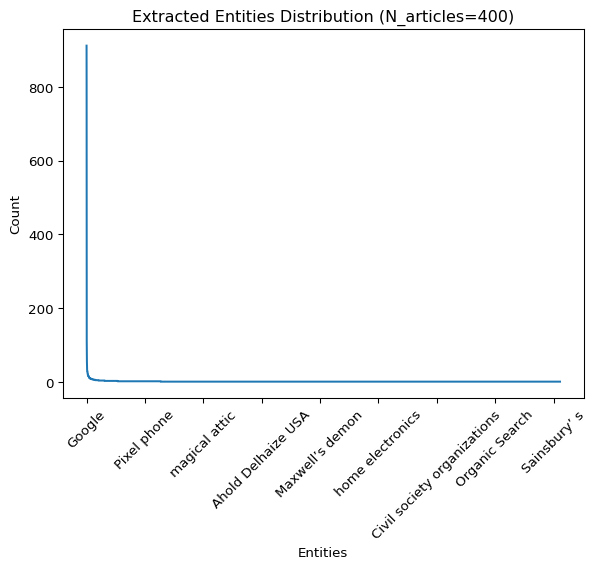
Code
entities_per_media = defaultdict(list)
# Get a list of entities mentioned in each media for each media
for ex in extract:
if "entity" in ex.keys():
entities_per_media[ex["media_id"]].append(ex["entity"]["entity_text"])
media_id_list = list(entities_per_media.keys())
coc_matrix = np.zeros((n_unique_entities, n_unique_entities)) # Empty co-occurrence matrix
# Map each entities to their corresponding column/row index
idx_mapping = {ent: idx for idx, ent in enumerate(entities_counts.keys())}
for media_id in media_id_list:
entities_list = np.array(entities_per_media[media_id])
for ent in entities_list:
# Get all entities inside the list except the current `ent`
neighbors = entities_list[np.not_equal(entities_list, ent)]
# Increase the occurrence of `ent` with all neighbors
for neigh in neighbors:
coc_matrix[idx_mapping[ent], idx_mapping[neigh]] += 1
coc_df = pd.DataFrame(coc_matrix, columns=idx_mapping.keys(), index=idx_mapping.keys())
coc_df.to_csv("data/processed/co_occurrence_matrix.csv", index=False)
coc_df.to_parquet("data/processed/co_occurrence_matrix.parquet", engine="fastparquet")Code
coc = pd.read_parquet("data/processed/co_occurrence_matrix.parquet", engine="fastparquet")Code
fig, ax = plt.subplots()
sns.heatmap(coc, ax=ax)
ax.tick_params("x", rotation=45)
plt.show()
plt.savefig("notebook/heatmap-co-occurrence-matrix.png")As expected, sparsity is very high and it is hard to see which entity text is most often associated with. Enabling a better visualization of cluster, we’ll reduce dimensionality by using a t-Distribution Stochastic Neighbor Embedding (TSNE) algorithm. Contrary to other dimensionality reductio techniques, this algorithm preserve global structure by increasing density around core clusters. As our co-occurrence matrix can be considered a ‘similarity’ matrix, we do not need any further preprocessing. As per the very peculiar distribution, we won’t use a scaling step as to avoid messing with the relationships strength between entities. Further supporting this claim, a trial with scaling deliver much worse result in terms of clusters.
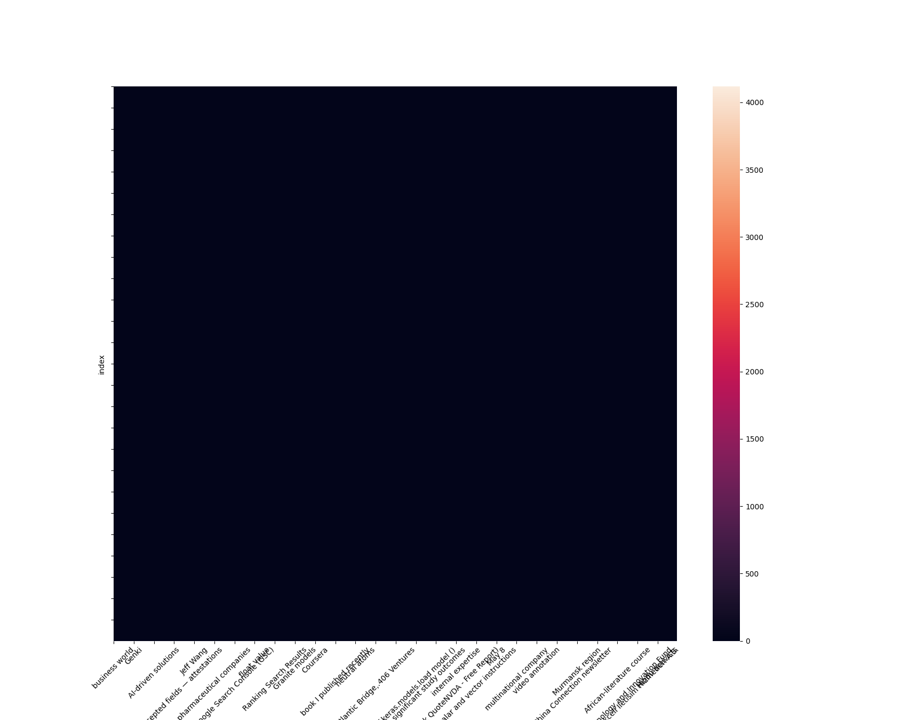
Code
from sklearn.manifold import TSNE
from sklearn.pipeline import Pipeline
from sklearn.preprocessing import MinMaxScaler
pipe = Pipeline(
steps=[
## ("scaler", MinMaxScaler()),
("tsne", TSNE())
]
)
coc_reddim = pipe.fit_transform(coc)
coc_reddim_df = pd.DataFrame(
np.concat((coc_reddim, coc_df.columns.to_numpy()[:, np.newaxis]), axis=1),
columns=["x", "y", "entity_text"]
)
coc_reddim_df.to_csv("data/processed/reduced-co-occurrence-matrix.csv", index=False)Code
coc_reddim_df = pd.read_csv("data/processed/reduced-co-occurrence-matrix.csv")Hovering over clusters of point, the user can them and the corresponding entities. Nevertheless, as per the entity distribution, we observe a a few large conglomerates of points at the center, with many small clusters, many of them consisting of 2 or 3 entities.
As expected, major actors (company, entities or product) in the AI space such as AI Model, Artificial Intelligence, NVIDIA, … flock together in a big area.
However, within this area, smaller groups can be observed. For example, we can observe a group involving “data privacy”, “GDPR”, “AI Model” and “Generative AI”. This presence of this group at the center of the bigger cluster shows that data privacy and governement isn’t a small trend, it is very much a concerns for the public.
Furthermore, we can observe entities such as “Trump Administration”, “Biden” and countries such as “China” or “USA” close to other technical entities such as “Large Language Model”. This further cement the fact that technological advancement if tighly tied with politics and countries agenda. Naturally, given the potential of modern AI technologies and their promises, it is expected that major powers are pulling strings.
Code
import plotly.express as px
fig = px.scatter(coc_reddim_df, x="x", y="y", hover_data=["entity_text"])
fig.show()10 Knowledge Graph
This notebook constructs a knowledge graph from AI media articles using NetworkX.
The graph contains three main node types:
- Articles
- Entities such as companies, people, and products
- Tags
The graph also includes three main edge types:
- MENTIONED_IN links between entities and articles
- RELATIONSHIP links between entities
- HAS_TAG links between articles and tags
10.1 Data Sources
The notebook uses the following input files:
langextract_extractions_json.pkl— extracted entities and relationshipsmedia_cleaned.csv— article-level metadatamedia_has_chunk_cleaned.csv— article chunksmedia_has_tags_cleaned.csv— article tags
10.2 Data Loading
In this step, the datasets required for constructing the knowledge graph are loaded into memory. The data consists of extracted entities and relationships, article metadata, article chunks, and associated tags. These sources provide both the structural and contextual information necessary for building the graph representation.
The overview table below summarizes the size of each dataset used in the analysis.
Loaded Data Overview
Code
pd.DataFrame(
{
"dataset": ["extractions", "media", "chunks", "tags"],
"rows": [len(extractions), len(media), len(chunks), len(tags)],
}
)| dataset | rows | |
|---|---|---|
| 0 | extractions | 27104 |
| 1 | media | 16317 |
| 2 | chunks | 436065 |
| 3 | tags | 84326 |
10.3 Data Preparation
Separate Entities and Relationships
The extracted information contains both entities and relationships in a single collection. To facilitate graph construction, these elements are separated into two structured tables: one containing entity mentions and another containing relationships between entities.
This separation allows the knowledge graph to represent entities as nodes and relationships as edges, enabling more efficient graph construction and analysis.
Show entity and relationship preparation
entities_list = []
relationships_list = []
for item in extractions:
if "entity" in item and item["entity"] is not None:
entities_list.append(
{
"media_id": item["media_id"],
**item["entity"],
}
)
elif "relationship" in item and item["relationship"] is not None:
relationships_list.append(
{
"media_id": item["media_id"],
**item["relationship"],
}
)
entities_df = pd.DataFrame(entities_list)
relationships_df = pd.DataFrame(relationships_list)Code
def clean_entity(text):
text = str(text).strip()
# remove descriptive prefixes
text = re.sub(r"^ai models like ", "", text, flags=re.IGNORECASE)
text = re.sub(r"^accelerate development of ", "", text, flags=re.IGNORECASE)
text = re.sub(r"^its ", "", text, flags=re.IGNORECASE)
# remove token related noise
text = re.sub(r" input tokens$", "", text, flags=re.IGNORECASE)
text = re.sub(r" output token costs$", "", text, flags=re.IGNORECASE)
return text
entities_df["entity_text"] = entities_df["entity_text"].apply(clean_entity)
entities_df["entity_text"] = entities_df["entity_text"].str.strip()
entities_df["entity_text"] = entities_df["entity_text"].str.replace(r"\s+", " ", regex=True)
ENTITY_ALIAS_MAP = {
"nvidia": "Nvidia",
"nvidia corporation": "Nvidia",
"google deepmind": "Google DeepMind",
"google's gemini": "Google Gemini",
"google’s gemini": "Google Gemini",
"u.s.": "United States",
"u.s": "United States",
"us": "United States",
"ai": "AI",
"artificial intelligence": "Artificial Intelligence",
}
NOISE_PATTERNS = [
r"^ai models like\s+",
r"^models like\s+",
r"^accelerate development of\s+",
r"^development of\s+",
r"^its\s+",
r"^their\s+",
r"^the\s+",
]
TRAILING_NOISE_PATTERNS = [
r"\s+input tokens$",
r"\s+output token costs$",
r"\s+token costs$",
r"\s+coding agent project$",
r"\s+project$",
]
def normalize_whitespace(text: str) -> str:
return " ".join(str(text).strip().split())
def clean_entity_text(text: str) -> str:
text = normalize_whitespace(text)
# Remove leading noisy descriptive phrases
for pattern in NOISE_PATTERNS:
text = re.sub(pattern, "", text, flags=re.IGNORECASE)
# Remove trailing noisy phrases
for pattern in TRAILING_NOISE_PATTERNS:
text = re.sub(pattern, "", text, flags=re.IGNORECASE)
text = normalize_whitespace(text)
# Apply alias mapping on lowercase form
lowered = text.lower()
if lowered in ENTITY_ALIAS_MAP:
return ENTITY_ALIAS_MAP[lowered]
# Default formatting
return text
# Apply cleaning only if entity_text exists
entities_df["entity_text"] = entities_df["entity_text"].apply(clean_entity_text)
# Optional: remove empty entity names after cleaning
entities_df = entities_df[entities_df["entity_text"].notna()]
entities_df = entities_df[entities_df["entity_text"].astype(str).str.strip() != ""]
# Optional quick check
entities_df["entity_text"].value_counts().head(20)entity_text
Gemini Robotics 1051
Google 912
Google DeepMind 796
AI robotics project Intrinsic 165
AI 155
United States 146
China 111
Nvidia 92
ChatGPT 89
OpenAI 82
Artificial Intelligence 66
Microsoft 59
Alphabet AI teams 56
AI models 39
Russia 34
data science 33
machine learning 32
healthcare 32
LLMs 31
generative AI 31
Name: count, dtype: int64Extraction Summary
After separating the extracted information, we compute a summary of the resulting datasets. This overview provides a quick validation of the extraction process and highlights the number of entities and relationships identified in the corpus.
Code
pd.DataFrame(
{
"component": ["entities", "relationships"],
"count": [len(entities_df), len(relationships_df)],
}
)| component | count | |
|---|---|---|
| 0 | entities | 26205 |
| 1 | relationships | 820 |
Top Entity Types To better understand the composition of the extracted entities, we examine the distribution of entity types. This helps identify which types of entities appear most frequently in the dataset, such as companies, products, people, and technologies.
Code
entities_df["type"].value_counts().head(10).rename_axis("entity_type").reset_index(name="count")| entity_type | count | |
|---|---|---|
| 0 | company | 3576 |
| 1 | product | 3240 |
| 2 | person | 2138 |
| 3 | technology | 1166 |
| 4 | organization | 1137 |
| 5 | research_group | 849 |
| 6 | country | 729 |
| 7 | location | 705 |
| 8 | AI model | 593 |
| 9 | industry | 478 |
Top Relationship Types In addition to entities, the extraction process also identifies relationships between entities. Analyzing the distribution of relationship types provides insight into the kinds of interactions described in the articles, such as partnerships, collaborations, and applications of AI technologies.
Code
relationships_df["type"].value_counts().head(10).rename_axis("relationship_type").reset_index(name="count")| relationship_type | count | |
|---|---|---|
| 0 | application | 40 |
| 1 | partnership | 34 |
| 2 | functionality | 27 |
| 3 | recommendation | 26 |
| 4 | benefit | 21 |
| 5 | impact | 20 |
| 6 | process | 20 |
| 7 | action | 19 |
| 8 | collaboration | 19 |
| 9 | feature | 18 |
10.4 Graph Construction
Initialize Graph With the cleaned and structured data prepared, we initialize a directed multi-graph using NetworkX. This graph structure allows multiple relationships between the same pair of nodes and preserves the direction of relationships when applicable.
Code
G = nx.MultiDiGraph()Add Article Nodes Each article in the dataset is represented as a node in the knowledge graph. These nodes store metadata such as the article title, publication domain, URL, and sentiment score. Article nodes act as the contextual source linking entities and tags.
Show article node creation
for _, row in media.iterrows():
G.add_node(
f"article_{row['media_id']}",
node_type="article",
media_id=row["media_id"],
title=row.get("title"),
domain=row.get("domain"),
url=row.get("url"),
date=row.get("date"),
sentiment=row.get("sentiment"),
)Add Tag Nodes and Edges Tags associated with articles are added as separate nodes in the graph. Each tag is connected to the article it describes using a HAS_TAG relationship. This allows the graph to capture topical information and enables tag-based exploration of the dataset.
Show tag node and edge creation
unique_tags = tags["tag"].dropna().unique()
for tag in unique_tags:
G.add_node(
f"tag_{tag}",
node_type="tag",
tag_name=tag,
)
for _, row in tags.iterrows():
G.add_edge(
f"article_{row['media_id']}",
f"tag_{row['tag']}",
edge_type="HAS_TAG",
)Add Entity Nodes (Deduplicated) Entities extracted from the articles are added to the graph as nodes. To avoid duplication, entities are consolidated based on their textual representation and type. Additional statistics, such as the number of mentions and the number of articles in which the entity appears, are computed and stored as node attributes.
Show entity deduplication and node creation
entity_key_map = {} # Maps (clean_entity_text, type) -> node_id
entity_stats = defaultdict(
lambda: {
"mention_count": 0,
"articles": set(),
"attributes": {},
"original_forms": set(),
}
)
for _, entity in entities_df.iterrows():
raw_text = str(entity["entity_text"]).strip()
clean_text = " ".join(raw_text.lower().split())
key = clean_text
entity_stats[key]["mention_count"] += 1
entity_stats[key]["articles"].add(entity["media_id"])
entity_stats[key]["original_forms"].add(raw_text)
for col in entity.index:
if col not in ["media_id", "entity_text", "type", "start_pos", "end_pos"]:
val = entity[col]
if pd.notna(val) if not isinstance(val, (list, dict)) else val is not None:
entity_stats[key]["attributes"][col] = val
if key not in entity_key_map:
node_id = f"entity_{len(entity_key_map)}"
entity_key_map[key] = node_id
G.add_node(
node_id,
node_type="entity",
entity_text=raw_text,
entity_type=entity["type"],
mention_count=0,
article_count=0,
)
for key, node_id in entity_key_map.items():
stats_entry = entity_stats[key]
canonical_name = min(stats_entry["original_forms"], key=len)
G.nodes[node_id]["entity_text"] = canonical_name
G.nodes[node_id]["mention_count"] = stats_entry["mention_count"]
G.nodes[node_id]["article_count"] = len(stats_entry["articles"])
G.nodes[node_id]["original_forms"] = list(stats_entry["original_forms"])
for attr_key, attr_val in stats_entry["attributes"].items():
G.nodes[node_id][attr_key] = attr_valAdd Entity–Article Edges Once entity nodes are created, each entity mention is linked to the corresponding article using a MENTIONED_IN relationship. These connections capture where entities appear within the corpus and provide a bridge between entities and the articles that reference them.
Show MENTIONED_IN edge creation
for _, entity in entities_df.iterrows():
raw_text = str(entity["entity_text"]).strip()
clean_text = " ".join(raw_text.lower().split())
key = clean_text
entity_node = entity_key_map[key]
article_node = f"article_{entity['media_id']}"
G.add_edge(
entity_node,
article_node,
edge_type="MENTIONED_IN",
)Add Explicit Relationship Edges Explicit relationships extracted from the text are added as edges between entity nodes. These edges capture interactions such as collaborations, partnerships, or applications described in the articles. Relationship attributes such as dates or financial values are also stored when available.
Show explicit relationship edge creation
relationship_edges = 0
for _, rel in relationships_df.iterrows():
if "party" in rel and isinstance(rel["party"], list) and len(rel["party"]) >= 2:
parties = rel["party"]
for i in range(len(parties)):
for j in range(i + 1, len(parties)):
party1_text = parties[i]
party2_text = parties[j]
party1_clean = " ".join(str(party1_text).strip().lower().split())
party2_clean = " ".join(str(party2_text).strip().lower().split())
party1_nodes = [
nid for text, nid in entity_key_map.items()
if text == party1_clean
]
party2_nodes = [
nid for text, nid in entity_key_map.items()
if text == party2_clean
]
if party1_nodes and party2_nodes:
G.add_edge(
party1_nodes[0],
party2_nodes[0],
edge_type="RELATIONSHIP",
relationship_type=rel["type"],
entity_text=rel.get("entity_text", ""),
date=rel.get("date", None),
money_amount=rel.get("money_amount", None),
media_id=rel["media_id"],
)
relationship_edges += 110.5 Graph Statistics
After constructing the knowledge graph, we compute summary statistics describing its structure. These statistics provide an overview of the size of the graph, including the number of nodes and edges, as well as the distribution of node types.
Code
stats = {
"total_nodes": G.number_of_nodes(),
"total_edges": G.number_of_edges(),
"article_nodes": len(
[n for n, d in G.nodes(data=True) if d.get("node_type") == "article"]
),
"entity_nodes": len(
[n for n, d in G.nodes(data=True) if d.get("node_type") == "entity"]
),
"tag_nodes": len(
[n for n, d in G.nodes(data=True) if d.get("node_type") == "tag"]
),
}
stats_df = pd.DataFrame(
{
"metric": [
"Total nodes",
"Total edges",
"Article nodes",
"Entity nodes",
"Tag nodes",
],
"value": [
stats["total_nodes"],
stats["total_edges"],
stats["article_nodes"],
stats["entity_nodes"],
stats["tag_nodes"],
],
}
)
stats_df| metric | value | |
|---|---|---|
| 0 | Total nodes | 33182 |
| 1 | Total edges | 111115 |
| 2 | Article nodes | 16317 |
| 3 | Entity nodes | 15911 |
| 4 | Tag nodes | 954 |
Entity Type Distribution
Code
entity_types = Counter([d.get('entity_type', 'unknown') for n, d in G.nodes(data=True)
if d.get('node_type') == 'entity'])
print("\nTop 15 Entity Types:")
for i, (etype, count) in enumerate(entity_types.most_common(15), 1):
print(f"{i:2}. {etype:20} {count:5,}")
Top 15 Entity Types:
1. product 1,636
2. person 1,519
3. company 1,505
4. organization 733
5. technology 609
6. location 445
7. concept 343
8. industry 264
9. group 263
10. process 213
11. software 196
12. metric 175
13. event 163
14. application 160
15. service 144Relationship Type Distribution
Code
rel_types = Counter([d.get('relationship_type', 'unknown') for u, v, d in G.edges(data=True)
if d.get('edge_type') == 'RELATIONSHIP'])
print("\nTop 15 Relationship Types:")
for i, (rtype, count) in enumerate(rel_types.most_common(15), 1):
print(f"{i:2}. {rtype:20} {count:5,}")
Top 15 Relationship Types:
1. partnership 36
2. application 36
3. impact 24
4. collaboration 20
5. functionality 20
6. strategy 19
7. recommendation 18
8. action 14
9. creation 14
10. requirement 13
11. feature 12
12. cost 12
13. employment 12
14. usage 11
15. integration 1010.6 Visualizations
To better understand the structure and content of the knowledge graph, we generate a series of visualizations. These plots highlight the most frequently mentioned entities, the distribution of entity and relationship types, and structural patterns within the network.
10.6.1 Top Entities by Mention Count
Code
entity_aliases = {
"nvidia": "Nvidia",
"nvidia corporation": "Nvidia",
"u.s.": "United States",
"us": "United States",
"u.s": "United States",
"google deepmind": "Google DeepMind"
}
[
d.get("entity_text")
for _, d in G.nodes(data=True)
if "gemini" in str(d.get("entity_text")).lower()
]
entities = [
(
d.get("entity_text", ""),
d.get("mention_count", 0),
d.get("entity_type", "")
)
for _, d in G.nodes(data=True)
if d.get("node_type") == "entity"
]
top_entities = sorted(entities, key=lambda x: x[1], reverse=True)[:20]
fig, ax = plt.subplots(figsize=(9, 6))
names = [e[0] for e in top_entities]
counts = [e[1] for e in top_entities]
colors = plt.cm.Set3(range(len(names)))
ax.barh(range(len(names)), counts, color=colors)
ax.set_yticks(range(len(names)))
ax.set_yticklabels(names)
ax.set_xlabel("Mention Count", fontsize=12)
ax.set_title("Top 20 Entities by Mention Count", fontsize=14, fontweight="bold")
ax.invert_yaxis()
plt.tight_layout()
plt.show()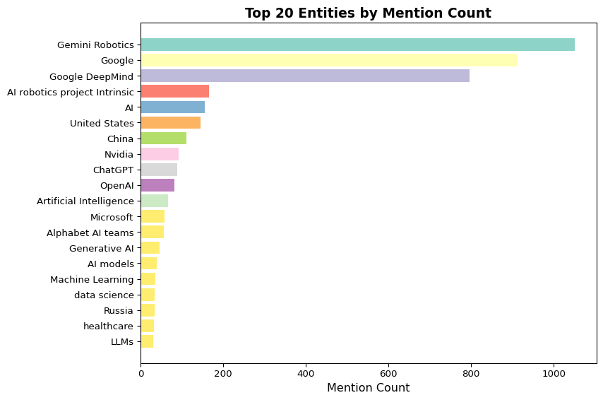
The figure shows the top 20 entities by mention count across the analyzed AI media articles. The results indicate a strong concentration of coverage around major technology firms and leading AI initiatives. Google and Google DeepMind dominate the mentions, suggesting their central role in the current AI landscape, while entities such as OpenAI, Nvidia, Microsoft, and ChatGPT further reflect the prominence of large technology companies and generative AI systems in shaping contemporary AI discourse.
10.6.2 Entity Type Distribution
Code
top_types = entity_types.most_common(15)
fig, ax = plt.subplots(figsize=(9, 6))
types = [t[0] for t in top_types]
type_counts = [t[1] for t in top_types]
ax.bar(range(len(types)), type_counts, color="steelblue")
ax.set_xticks(range(len(types)))
ax.set_xticklabels(types, rotation=45, ha="right")
ax.set_ylabel("Count", fontsize=12)
ax.set_title("Top 15 Entity Types", fontsize=14, fontweight="bold")
plt.tight_layout()
plt.show()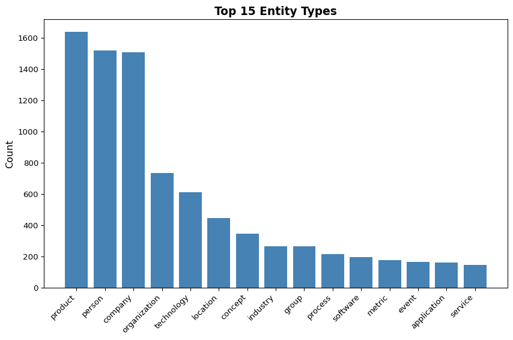
Products, companies, and persons represent the most frequent entity categories, indicating that media coverage is strongly centered around technological products, corporate actors, and key individuals involved in AI development. Categories such as organizations, technologies, and locations also appear prominently, reflecting the broader institutional and geographic context in which AI innovation occurs. Overall, the distribution suggests that AI-related media narratives are driven primarily by commercial technologies and the organizations responsible for their development and deployment.
10.6.3 Relationship Type Distribution
Code
top_rel_types = rel_types.most_common(15)
fig, ax = plt.subplots(figsize=(9, 6))
rel_type_names = [t[0] for t in top_rel_types]
rel_type_counts = [t[1] for t in top_rel_types]
ax.barh(range(len(rel_type_names)), rel_type_counts, color="coral")
ax.set_yticks(range(len(rel_type_names)))
ax.set_yticklabels(rel_type_names)
ax.set_xlabel("Count", fontsize=12)
ax.set_title("Top 15 Relationship Types", fontsize=14, fontweight="bold")
ax.invert_yaxis()
plt.tight_layout()
plt.show()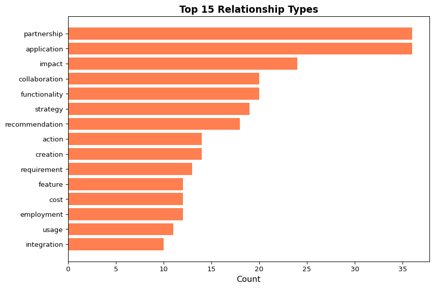
The figure shows the most common relationship types identified between entities in the knowledge graph. Partnership, application, and impact appear as the most frequent relationship categories, indicating that AI media coverage often focuses on collaborations between organizations and the practical deployment of AI technologies. Relationships such as collaboration, strategy, and functionality further highlight how discussions around AI frequently emphasize technological capabilities and strategic initiatives. Overall, the distribution suggests that media narratives around AI are largely framed through partnerships, technological applications, and their broader economic or societal implications.
10.6.4 Tag Distribution
Code
tag_counts = {}
for n, d in G.nodes(data=True):
if d.get("node_type") == "tag":
tag_counts[d.get("tag_name", "")] = len(list(G.in_edges(n)))
sorted_tags = sorted(tag_counts.items(), key=lambda x: x[1], reverse=True)[:15]
fig, ax = plt.subplots(figsize=(9, 6))
tag_names = [t[0] for t in sorted_tags]
tag_vals = [t[1] for t in sorted_tags]
ax.bar(range(len(tag_names)), tag_vals, color="mediumseagreen")
ax.set_xticks(range(len(tag_names)))
ax.set_xticklabels(tag_names, rotation=45, ha="right")
ax.set_ylabel("Article Count", fontsize=12)
ax.set_title("Top 15 Tags by Article Count", fontsize=14, fontweight="bold")
plt.tight_layout()
plt.show()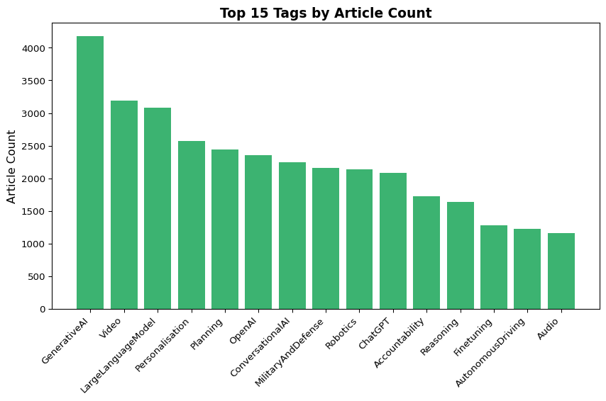
The figure shows the most common tags associated with the articles, with Generative AI, Video, and Large Language Models appearing most frequently. This indicates that recent AI media coverage is strongly focused on generative technologies and their applications across different domains.
10.6.5 Acquisition Network
Code
acquisition_edges = [
(u, v, d)
for u, v, d in G.edges(data=True)
if d.get("relationship_type") == "acquisition"
]
if acquisition_edges:
acq_graph = nx.DiGraph()
for u, v, d in acquisition_edges:
u_name = G.nodes[u].get("entity_text", u)
v_name = G.nodes[v].get("entity_text", v)
acq_graph.add_edge(u_name, v_name, **d)
fig, ax = plt.subplots(figsize=(9, 6))
pos = nx.spring_layout(acq_graph, k=2, iterations=50, seed=42)
nx.draw_networkx_nodes(
acq_graph,
pos,
node_color="lightblue",
node_size=1000,
alpha=0.9,
ax=ax
)
nx.draw_networkx_edges(
acq_graph,
pos,
edge_color="gray",
arrows=True,
arrowsize=20,
ax=ax
)
nx.draw_networkx_labels(acq_graph, pos, font_size=8, ax=ax)
ax.set_title("Acquisition Network", fontsize=14, fontweight="bold")
ax.axis("off")
plt.tight_layout()
plt.show()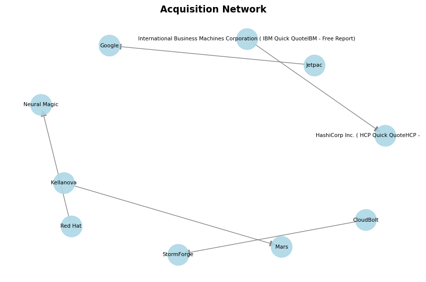
This network illustrates acquisition relationships identified in the dataset. Nodes represent companies, while edges indicate acquisition events extracted from the articles. Due to the limited number of acquisition mentions in the corpus, the resulting network consists of a small number of isolated acquisition pairs.
10.6.6 Company Network
Code
companies = [
(n, d.get("entity_text", ""), d.get("mention_count", 0))
for n, d in G.nodes(data=True)
if d.get("node_type") == "entity" and d.get("entity_type") == "company"
]
top_companies = sorted(companies, key=lambda x: x[2], reverse=True)[:20]
top_company_nodes = {c[0] for c in top_companies}
company_subgraph = G.subgraph(top_company_nodes).copy()
simple_graph = nx.Graph()
for n, d in company_subgraph.nodes(data=True):
simple_graph.add_node(d.get("entity_text", ""), **d)
for u, v, d in company_subgraph.edges(data=True):
if d.get("edge_type") == "RELATIONSHIP":
u_name = G.nodes[u].get("entity_text", "")
v_name = G.nodes[v].get("entity_text", "")
simple_graph.add_edge(u_name, v_name, **d)
if simple_graph.number_of_nodes() > 0:
fig, ax = plt.subplots(figsize=(9, 6))
pos = nx.spring_layout(simple_graph, k=3, iterations=50, seed=42)
node_sizes = []
for node in simple_graph.nodes():
orig_node = [
n for n, d in G.nodes(data=True)
if d.get("entity_text") == node
]
if orig_node:
size = G.nodes[orig_node[0]].get("mention_count", 10) * 50
node_sizes.append(size)
else:
node_sizes.append(500)
nx.draw_networkx_nodes(
simple_graph,
pos,
node_color="lightcoral",
node_size=node_sizes,
alpha=0.7,
ax=ax
)
nx.draw_networkx_edges(
simple_graph,
pos,
edge_color="gray",
width=1,
alpha=0.5,
ax=ax
)
nx.draw_networkx_labels(simple_graph, pos, font_size=9, ax=ax)
ax.set_title(
"Top 20 Companies Network (node size = mention count)",
fontsize=14,
fontweight="bold"
)
ax.axis("off")
plt.tight_layout()
plt.show()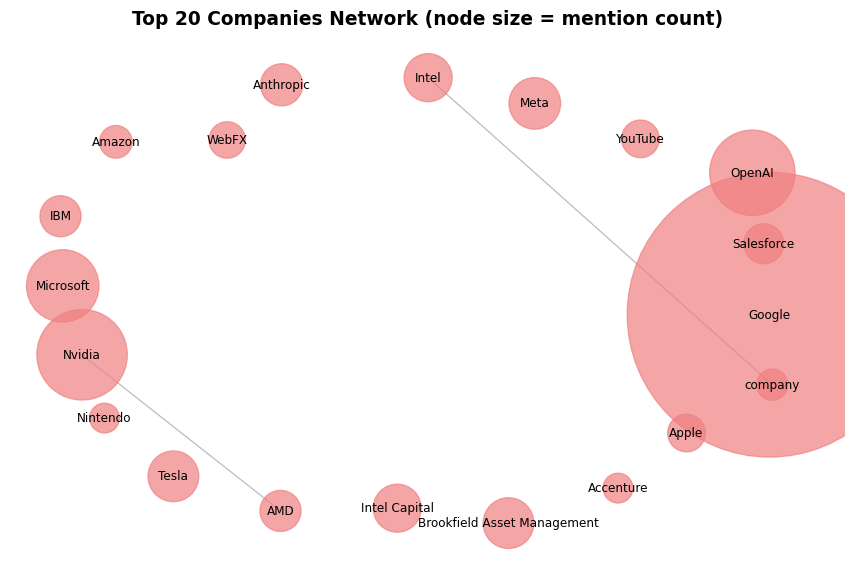
10.6.7 Entity Relationship Network
While the previous visualizations focus on individual entities or specific relationship types, this network provides a broader view of the entire entity-to-entity relationship landscape extracted from the corpus. Each node represents a unique entity, with node size proportional to its mention count across all articles. Directed edges capture the relationships identified by LangExtract, such as partnerships, collaborations, acquisitions, and applications. This visualization reveals how key players in the AI ecosystem are interconnected and which entities act as bridges between different clusters of activity.
Code
top_n = 15
all_entities = [
(n, d.get("mention_count", 0))
for n, d in G.nodes(data=True)
if d.get("node_type") == "entity"
]
anchor_nodes = {
n for n, _ in sorted(all_entities, key=lambda x: x[1], reverse=True)[:top_n]
}
# Build graph: anchors + all entities they connect to via RELATIONSHIP
rel_graph = nx.DiGraph()
for u, v, d in G.edges(data=True):
if d.get("edge_type") == "RELATIONSHIP":
if u in anchor_nodes or v in anchor_nodes:
u_name = G.nodes[u].get("entity_text", u)
v_name = G.nodes[v].get("entity_text", v)
rel_graph.add_edge(u_name, v_name, label=d.get("relationship_type", ""))
rel_graph.nodes[u_name]["mention_count"] = G.nodes[u].get("mention_count", 1)
rel_graph.nodes[v_name]["mention_count"] = G.nodes[v].get("mention_count", 1)
fig, ax = plt.subplots(figsize=(14, 10))
pos = nx.spring_layout(rel_graph, seed=42, k=2.5, iterations=100)
node_sizes = [
rel_graph.nodes[n].get("mention_count", 10) * 30
for n in rel_graph.nodes()
]
nx.draw_networkx_nodes(rel_graph, pos, node_size=node_sizes,
node_color="steelblue", alpha=0.8, ax=ax)
nx.draw_networkx_edges(rel_graph, pos, arrows=True, arrowsize=15,
edge_color="gray", alpha=0.5, ax=ax)
nx.draw_networkx_labels(rel_graph, pos, font_size=8, ax=ax)
nx.draw_networkx_edge_labels(rel_graph, pos,
edge_labels={(u, v): d["label"] for u, v, d in rel_graph.edges(data=True)},
font_size=6, ax=ax)
ax.set_title("Top Entity Relationship Network (node size = mention count)",
fontsize=14, fontweight="bold")
ax.axis("off")
plt.tight_layout()
plt.show()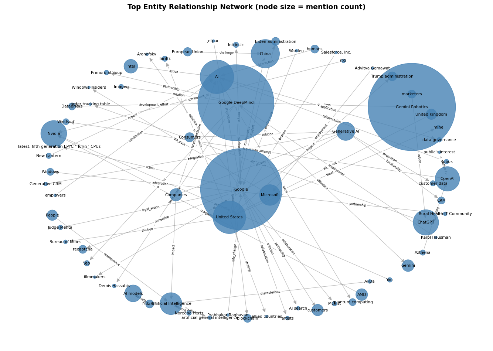
The network illustrates the richness of entity interactions within the AI media corpus. Densely connected nodes such as Google, OpenAI, and Nvidia confirm their central role not only in terms of raw mention count but also in terms of active relationships with other actors. Smaller, peripheral nodes often represent emerging companies or niche technologies that interact with one or two central players, reflecting the hierarchical nature of the current AI landscape.
10.6.8 Centrality Analysis
Centrality analysis is used to identify the most important nodes in a network based on their position and connections. In this knowledge graph, nodes represent entities extracted from AI-related media articles, while edges represent relationships between them.
We use degree centrality, which measures how many connections a node has relative to the total number of nodes in the network.
The degree centrality of a node (v) is defined as:
\[ C_D(v) = \frac{k_v}{N - 1} \]
where:
- \(deg(v)\) is the number of connections (degree) of node \(v\)
- \(N\) is the total number of nodes in the network
Entities with higher centrality scores are more strongly connected within the AI ecosystem.
Code
entity_nodes = [
n for n, d in G.nodes(data=True)
if d.get("node_type") == "entity"
]
entity_subgraph = G.subgraph(entity_nodes)
degree_cent = nx.degree_centrality(entity_subgraph)
top_central = sorted(degree_cent.items(), key=lambda x: x[1], reverse=True)[:20]
fig, ax = plt.subplots(figsize=(9, 6))
names = [G.nodes[n].get("entity_text", "") for n, _ in top_central]
scores = [score for _, score in top_central]
ax.barh(range(len(names)), scores, color="mediumpurple")
ax.set_yticks(range(len(names)))
ax.set_yticklabels(names)
ax.set_xlabel("Degree Centrality", fontsize=12)
ax.set_title("Top 20 Most Connected Entities", fontsize=14, fontweight="bold")
ax.invert_yaxis()
plt.tight_layout()
plt.show()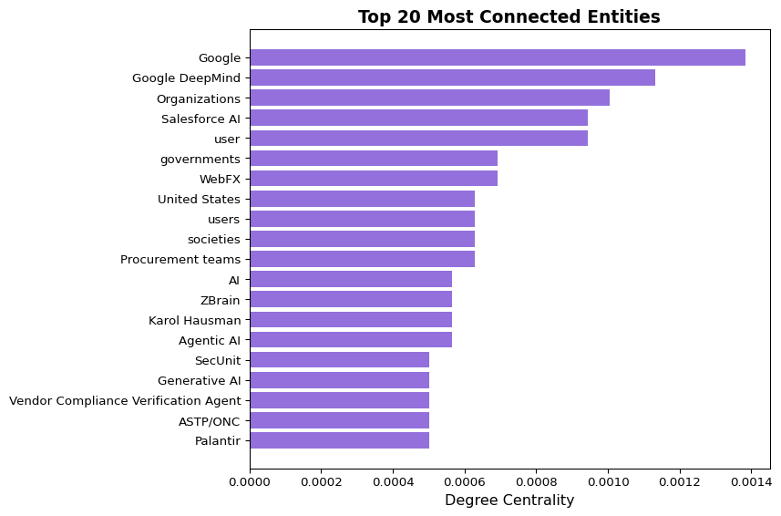
10.6.9 Small ego network around “healthcare”
Code
target_entity = "healthcare"
# Find the node id for Google
google_nodes = [
n for n, d in G.nodes(data=True)
if d.get("node_type") == "entity" and d.get("entity_text") == target_entity
]
if google_nodes:
google_node = google_nodes[0]
# Get direct neighbors
neighbors = set(G.predecessors(google_node)) | set(G.successors(google_node))
ego_nodes = {google_node} | neighbors
# Build subgraph
ego_graph = G.subgraph(ego_nodes).copy()
# Create a simpler graph for plotting labels cleanly
plot_graph = nx.Graph()
for n, d in ego_graph.nodes(data=True):
label = d.get("entity_text") or d.get("tag_name") or d.get("title") or str(n)
plot_graph.add_node(
n,
label=label,
node_type=d.get("node_type", "unknown")
)
for u, v, d in ego_graph.edges(data=True):
edge_label = d.get("relationship_type") or d.get("edge_type", "")
plot_graph.add_edge(u, v, label=edge_label)
fig, ax = plt.subplots(figsize=(9, 6))
pos = nx.spring_layout(plot_graph, seed=42, k=1.5)
nx.draw_networkx_nodes(plot_graph, pos, node_size=1400, alpha=0.8, ax=ax)
nx.draw_networkx_edges(plot_graph, pos, alpha=0.6, ax=ax)
node_labels = {n: d["label"] for n, d in plot_graph.nodes(data=True)}
edge_labels = {(u, v): d["label"] for u, v, d in plot_graph.edges(data=True)}
nx.draw_networkx_labels(plot_graph, pos, labels=node_labels, font_size=9, ax=ax)
nx.draw_networkx_edge_labels(plot_graph, pos, edge_labels=edge_labels, font_size=7, ax=ax)
ax.set_title("Healthcare Ego Network", fontsize=14, fontweight="bold")
ax.axis("off")
plt.tight_layout()
plt.show()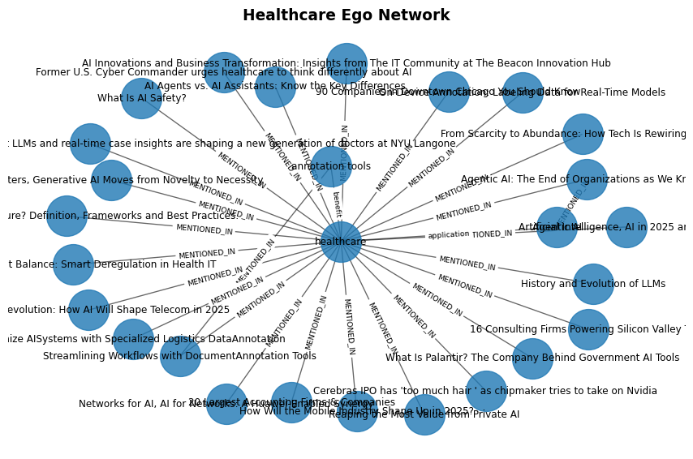
The figure illustrates a local ego network centered on the entity “healthcare”. The central node represents the healthcare concept, while the surrounding nodes correspond to articles and entities connected to it through MENTIONED_IN relationships. This visualization highlights how healthcare-related discussions are linked to a variety of AI topics, including agentic AI, annotation tools, data infrastructure, and industry applications, demonstrating the broad integration of AI technologies within the healthcare domain.
10.6.10 Only Google’s entity-to-entity relationship
Code
google_node = [
n for n, d in G.nodes(data=True)
if d.get("node_type") == "entity" and d.get("entity_text") == "Google"
][0]
google_relationships = []
for u, v, d in G.edges(data=True):
if d.get("edge_type") == "RELATIONSHIP" and (u == google_node or v == google_node):
google_relationships.append({
"source": G.nodes[u].get("entity_text", u),
"target": G.nodes[v].get("entity_text", v),
"relationship_type": d.get("relationship_type", ""),
"media_id": d.get("media_id", "")
})
pd.DataFrame(google_relationships)| source | target | relationship_type | media_id | |
|---|---|---|---|---|
| 0 | Google DeepMind | partnership | 4368 | |
| 1 | Google DeepMind | collaboration | 4368 | |
| 2 | Google DeepMind | collaboration | 9778 | |
| 3 | Google DeepMind | collaboration | 9778 | |
| 4 | Google DeepMind | collaboration | 8322 | |
| 5 | Google DeepMind | collaboration | 8322 | |
| 6 | AI search | criticism | 2434 | |
| 7 | AI search | criticism | 2434 | |
| 8 | AI search | criticism | 2434 | |
| 9 | customers | partnership | 2682 | |
| 10 | recaptcha | ownership | 16461 | |
| 11 | recaptcha | ownership | 16461 | |
| 12 | Intrinsic | merger | 721 | |
| 13 | Intrinsic | merger | 721 | |
| 14 | latest, fifth-generation EPYC ‘ Turin ’ CPUs | action | 12330 | |
| 15 | artists | collaboration | 13979 | |
| 16 | McNitt | collaboration | 13979 | |
| 17 | Aronofsky | collaboration | 13979 | |
| 18 | Prabhakar Raghavan | role_change | 4914 | |
| 19 | Judge Mehta | legal_action | 3536 | |
| 20 | Warden | employment | 2487 | |
| 21 | Jetpac | acquisition | 2487 |
The table highlights entity-to-entity relationships involving Google within the knowledge graph. The relationships include collaborations, partnerships, acquisitions, and organizational changes, illustrating Google’s central position in the AI ecosystem and its interactions with both internal entities (e.g., Google DeepMind) and external actors.
Google’s entity-to-entity relationships
Code
target_entity = "Google"
google_nodes = [
n for n, d in G.nodes(data=True)
if d.get("node_type") == "entity" and d.get("entity_text") == target_entity
]
if google_nodes:
google_node = google_nodes[0]
related_edges = []
related_nodes = {google_node}
for u, v, d in G.edges(data=True):
if d.get("edge_type") == "RELATIONSHIP" and (u == google_node or v == google_node):
related_edges.append((u, v, d))
related_nodes.add(u)
related_nodes.add(v)
subG = nx.DiGraph()
for n in related_nodes:
subG.add_node(n, label=G.nodes[n].get("entity_text", str(n)))
for u, v, d in related_edges:
subG.add_edge(u, v, label=d.get("relationship_type", ""))
fig, ax = plt.subplots(figsize=(9, 6))
pos = nx.spring_layout(subG, seed=42, k=2)
nx.draw_networkx_nodes(subG, pos, node_size=1800, alpha=0.8, ax=ax)
nx.draw_networkx_edges(subG, pos, arrows=True, arrowsize=20, alpha=0.6, ax=ax)
nx.draw_networkx_labels(
subG,
pos,
labels={n: d["label"] for n, d in subG.nodes(data=True)},
font_size=9,
ax=ax
)
nx.draw_networkx_edge_labels(
subG,
pos,
edge_labels={(u, v): d["label"] for u, v, d in subG.edges(data=True)},
font_size=8,
ax=ax
)
ax.set_title("Google Relationship Network", fontsize=14, fontweight="bold")
ax.axis("off")
plt.tight_layout()
plt.show()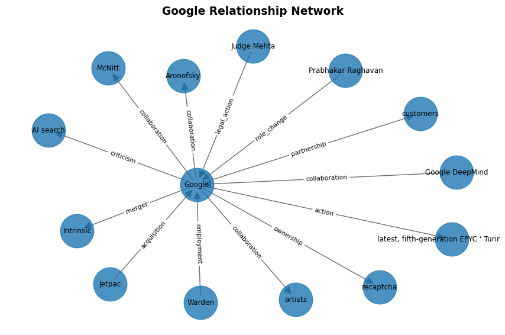
10.7 Export Results
Finally, the constructed knowledge graph and its derived datasets are exported for further analysis. The graph structure is saved in serialized form, while entity and relationship tables are exported as CSV files. Summary statistics are also stored to facilitate downstream analysis or integration with graph databases.
Show export code
output_dir = Path("notebook/knowledge_graph")
output_dir.mkdir(parents=True, exist_ok=True)
graph_path = output_dir / "knowledge_graph.pkl"
with open(graph_path, "wb") as f:
pickle.dump(G, f)
entity_export = []
for n, d in G.nodes(data=True):
if d.get("node_type") == "entity":
entity_export.append(
{
"node_id": n,
"entity_text": d.get("entity_text", ""),
"entity_type": d.get("entity_type", ""),
"mention_count": d.get("mention_count", 0),
"article_count": d.get("article_count", 0),
}
)
entity_df = pd.DataFrame(entity_export).sort_values("mention_count", ascending=False)
entity_path = output_dir / "entities.csv"
entity_df.to_csv(entity_path, index=False)
rel_export = []
for u, v, d in G.edges(data=True):
if d.get("edge_type") == "RELATIONSHIP":
rel_export.append(
{
"source": u,
"target": v,
"source_entity": G.nodes[u].get("entity_text", ""),
"target_entity": G.nodes[v].get("entity_text", ""),
"relationship_type": d.get("relationship_type"),
"date": d.get("date"),
"money_amount": d.get("money_amount"),
"media_id": d.get("media_id"),
}
)
rel_df = pd.DataFrame(rel_export)
rel_path = output_dir / "relationships.csv"
rel_df.to_csv(rel_path, index=False)
stats_path = output_dir / "graph_statistics.json"
with open(stats_path, "w") as f:
json.dump(
{
**stats,
"entity_types": dict(entity_types.most_common(20)),
"relationship_types": dict(rel_types.most_common(20)),
},
f,
indent=2,
)11 Conclusions and Outlook
11.1 What We Achieved
Stage 1 of this project resulted in a complete, reproducible NLP pipeline covering all required components: data cleaning and normalization, exploratory analysis, sentiment analysis, temporal analysis, topic modelling, entity and relation extraction, and knowledge graph construction.
We are satisfied with the overall quality and depth of the work. The data cleaning pipeline handles several non-trivial encoding issues (mojibake, hex remnants, sentence boundary artifacts) that would have compromised downstream analysis. The BERTopic implementation with pre-computed embeddings produces 20 interpretable and well-separated topics. The sentiment analysis at chunk level provides granular, article-level scores using a well-suited pre-trained model. The knowledge graph, built with NetworkX from LangExtract output, is structured, queryable, and exported for Stage 3 reuse.
11.2 Where We See Further Potential
Despite the solid foundation, several areas could be improved given more time:
Entity quality. The LangExtract output contains some noise — generic terms such as “users”, “governments”, or “societies” appear as entity nodes. A more refined filtering and normalization step would improve knowledge graph quality. The entity alias map is a good start but incomplete.
Relationship coverage. Only 820 explicit relationships were extracted across 16,317 articles. LangExtract was run on a sample due to runtime constraints. Running it on the full corpus would substantially enrich the graph.
Topic–entity integration. We identified 20 topics and thousands of entities independently, but did not explicitly link them in the knowledge graph. Adding topic nodes as a second entity layer (e.g., OpenAI → belongs_to → ML Models & Training Data) would enable richer trend queries in Stage 3.
Clustering coefficient. The centrality analysis computes degree centrality but does not yet include clustering coefficients, which would reveal tightly connected subgroups within the AI ecosystem.
Sentiment refinement. The RoBERTa model was trained on Twitter data, which differs stylistically from long-form journalism. A domain-adapted model would likely produce more reliable scores for this corpus.
12 Use of AI Tools
Throughout this project, generative AI tools were used to support several parts of the workflow.
AI was used for debugging Python code, resolving library-specific questions (spaCy, BERTopic, NetworkX, LangExtract), advising on architectural decisions such as the entity-relationship schema and knowledge graph design, and reviewing pull requests. AI also supported the writing of explanatory text throughout the notebook to ensure clarity and grammatical correctness, as this report is written in English as a non-native language.
AI was also used during active coding sessions to accelerate boilerplate code generation, particularly for data transformation steps and visualization code.
It is important to note that AI tools occasionally produced ambiguous or inconsistent answers, particularly for complex pipeline logic or edge cases in library APIs. All outputs were critically reviewed, and final decisions — including analytical interpretations, entity label choices, and topic assignments — were made manually by the team.